近代物理學 - 分子 (Modern Physics - Molecules)#
日期: 2026.05.12
閱讀與計算約定
【假設】 說明模型及忽略的效應；【已知】 是前章結果、實驗資料或直接引用的定理；【定義】 固定本節的符號。各類編號在節內使用，跨節引用時附節號。
推導保留「列式 → 代入 → 化簡 → 結果」的順序。等號表示在已列假設下成立的關係；近似、數值四捨五入與數量級估算以 \(\approx\) 或 \(\sim\) 區分。
代入前統一單位：\(1\ \mathrm{eV}=1.602176634\times10^{-19}\ \mathrm{J}\)。指數、對數及三角函數的引數須為無因次；結果另檢查量綱、正負號及適用範圍。
本章模型與符號
電子鍵結主要使用固定原子核（Born–Oppenheimer）近似與原子軌域線性組合；轉動採剛性轉子，振動採平衡點附近的簡諧近似。這些模型各有適用範圍，不能把模型內的結論直接推廣到解離、高振動態或所有分子。
符號 |
意義與單位 |
|---|---|
\(R,R_0\) |
核間距、平衡核間距；依題目使用 \(\mathrm{m}\) 或 \(\mathrm{nm}\)，代入時須一致 |
\(r\) |
電子到指定原子核的距離，不等於核間距 \(R\) |
\(\psi_S,\psi_A\) |
對稱、反對稱空間組合；是否歸一化依該節定義 |
\(s_S,s_A\) |
對稱、反對稱自旋函數；與空間函數分開檢查交換性 |
\(\mu,I\) |
兩原子的縮減質量 \([\mathrm{kg}]\)、轉動慣量 \([\mathrm{kg\,m^2}]\) |
\(k,\nu,\upsilon\) |
力常數 \([\mathrm{N/m}]\)、頻率 \([\mathrm{Hz}]\)、振動量子數（無因次）；\(\nu\) 與 \(\upsilon\) 不同 |
\(E_b\) |
本章能量曲線最低點相對分離原子的深度；與含零點振動的解離能須區分 |
8.1 分子鍵 (The Molecular Bond)#
期中考之後，這門課一直沿著同一條路線往上疊：有了薛丁格方程式之後，先解最簡單的系統——氫原子，一個質子、一個電子；接著把電子一顆一顆加上去，就是第七章的多電子原子；本章再往上疊一層：除了加電子，連原子核也多加幾顆，不同的原子之間於是形成分子 (molecule)。
每往上疊一層，複雜度不是變成兩倍，而是好幾倍。氫原子大概已經是手算解析解的極限；多加一顆電子或一顆質子，方程式就很難再用手解。到了多原子核、多電子的分子，除了最簡單的 \(\text{H}_2^+\) 之外，實務上幾乎只能靠數值方法，或是靠各式各樣的模型 (model)——化學裡的 \(\sigma\) 鍵、\(\pi\) 鍵、\(sp^2\)、\(sp^3\) 混成軌域，都是這類模型。本章讀起來比前兩章輕鬆，並不是因為分子比較簡單，而是因為真要硬算實在太難，只能改用模型來解釋。
本章有兩條主軸：
鍵結 (bonding)：學化學的人叫它鍵結；對學物理或學電子的人而言，它的本質就是電子的共享 (electron sharing)——電子多分給對方一點，或少分給對方一點。（8.1–8.5）
分子有形狀：原子不論有幾顆電子都只是「一顆」，分子卻由好幾顆原子組成，於是多出了原子之間的相對運動——轉動 (rotation) 與振動 (vibration)，各自帶來新的能階與光譜。（8.6–8.8）
三種可能的結果：共價鍵、離子鍵、不鍵結#
把原子結合在一起的是電力，也就是庫侖作用力。兩顆原子靠近時，要考慮的不只是電子與電子之間的作用，還有電子與另一顆原子的原子核之間、原子核與原子核之間的所有庫侖作用。這些作用加總起來，只有三種可能的結果：
共價鍵 (covalent bond)：一對或多對電子由兩個原子共享。這些電子在兩個原子核之間停留的時間比在其他地方長；帶負電的電子就像一層膠水 (glue)，把兩個原本應該互相排斥的正電原子核拉在一起。典型的例子是氫分子 \(\text{H}_2\)：中間的電子既不屬於左邊、也不屬於右邊，而是由兩個質子共享（圖 8.1）。
離子鍵 (ionic bond)：一個或多個電子直接從一個原子轉移到另一個原子，產生的正、負離子再靠庫侖力互相吸引。這通常發生在週期表第一族與第七族（或第二族與第六族）的元素之間，典型的例子是氯化鈉 \(\text{NaCl}\)（圖 8.2、圖 8.3）。
不形成鍵結。
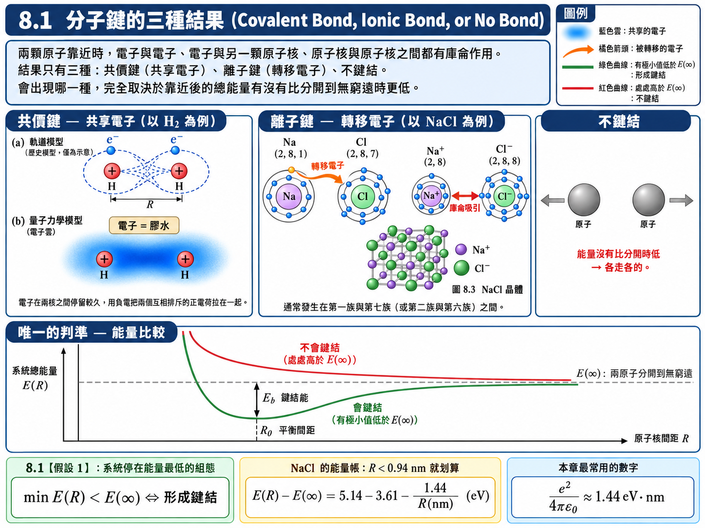
本節先比較固定核間距下的總能量與分離原子的能量，以判斷是否存在能量有利的鍵結組態。實際能否形成並長時間保留分子，還取決於能量釋放途徑、溫度及反應速率。
假設與已知 (Assumptions & Preliminaries)#
【已知 1】 庫侖位能 (Coulomb potential energy)： 適用於兩個點電荷之間的靜電作用；同號相斥為正、異號相吸為負。
\[U = \frac{q_1 q_2}{4\pi\varepsilon_0 r}\]\(q_1, q_2\) : 兩點電荷的電量 (Charges)，\([\text{C}]\)
\(r\) : 兩電荷的間距 (Separation)，\([\text{m}]\)
\(\varepsilon_0\) : 真空電容率 (Vacuum permittivity)，\([\text{F}\cdot\text{m}^{-1}]\)，\(\varepsilon_0 \approx 8.854 \times 10^{-12} \ \text{F}\cdot\text{m}^{-1}\)
註：本章反覆使用的數值組合為 \(\dfrac{e^2}{4\pi\varepsilon_0} \approx 1.44 \ \text{eV}\cdot\text{nm}\)。
【假設 1】 固定原子核的能量曲線 (Fixed-nuclei energy curve)： 先比較同一電子態模型下的 \(E(R)\)，暫不計核的零點振動、熵與反應動力學。若曲線最低點低於分離極限，表示有能量較低的候選鍵結組態；是否支援束縛振動態仍須檢查核運動。
\[\min_{R}E\left( R \right) < E\left( \infty \right) \qquad \Longleftrightarrow \qquad \text{能量曲線最低點低於分離極限}\]\(R\) : 兩原子核的間距 (Internuclear separation)，\([\text{nm}]\)
\(E(R)\) : 原子核間距為 \(R\) 時整個系統（所有電子與原子核）的總能量 (Total energy of the system)，\([\text{eV}]\)
\(E(\infty)\) : 兩顆原子分開到無窮遠、互不作用時的總能量 (Energy of the separated atoms)，\([\text{eV}]\)
【定義 1】 鍵結能 (Binding energy)： 形成鍵結之後，系統的能量比兩顆原子分開時低了多少；等價地說，就是要把分子拆回兩顆中性原子所必須提供的能量。
\[E_b \overset{\text{def}}{=} E\left( \infty \right) - E\left( R_0 \right)\]\(R_0\) : 平衡間距，即 \(E(R)\) 取極小值的位置 (Equilibrium separation)，\([\text{nm}]\)
\(E_b\) : 鍵結能 (Binding energy)，\([\text{eV}]\)
能量零點檢查： 這裡 \(E_b\) 對應井深 \(D_e\)；若最低振動態的零點能為 \(E_{\mathrm{zp}}\)，由該態解離所需的能量為 \(D_0=D_e-E_{\mathrm{zp}}\)。比較實驗解離能時須先確認採用哪一種定義。
【已知 2】 鈉的游離能與氯的電子親和能 (Ionization energy of Na and electron affinity of Cl)： 鈉在 \(n=3\) 殼層只有一顆電子（\(n=1, 2\) 已填滿），把它拿走需要 \(5.14 \ \text{eV}\)；氯在 \(n=3\) 殼層有七顆電子，\(3s\)、\(3p\) 只差一顆就填滿，多收一顆電子會放出 \(3.61 \ \text{eV}\)。
\[\begin{split}\begin{gather*} \text{Na} + 5.14 \ \text{eV} &\longrightarrow& \text{Na}^+ + e^- \\ \text{Cl} + e^- &\longrightarrow& \text{Cl}^- + 3.61 \ \text{eV} \end{gather*}\end{split}\]
推導：離子鍵的能量帳#
以 \(\text{NaCl}\) 為例，「形成離子鍵」其實是三個步驟的能量相加：鈉丟掉一顆電子（花能量）、氯收下這顆電子（放能量）、形成的 \(\text{Na}^+\) 與 \(\text{Cl}^-\) 互相吸引（放能量）。把三筆帳加起來，再與兩顆中性原子分開無窮遠時比較：
在【假設 1】的能量比較下，該組態比中性原子分離時低的條件是上式小於零：
也就是說，電子轉移本身是虧本的（淨花費 \(1.53 \ \text{eV}\)），但只要兩個離子靠得比 \(0.94 \ \text{nm}\) 更近，庫侖吸引放出的能量就足以把這筆成本付清。實際的 \(\text{NaCl}\) 分子平衡間距約為 \(0.236 \ \text{nm}\)，此處的庫侖能約 \(6.1 \ \text{eV}\)，扣掉 \(1.53 \ \text{eV}\) 後估計的鍵結能約 \(4.6 \ \text{eV}\)；實驗值約 \(4.2 \ \text{eV}\)，略小一些，差額來自兩個離子的電子雲重疊時產生的短程排斥。
【物理知識回顧】 共價與離子特性在真實鍵結中常同時存在。上述能量帳展示如何比較候選組態；要求出平衡距離，還要計入短程排斥。若要討論有限溫度下的生成與解離，則須進一步考慮自由能與動力學。
8.2 電子共享 (Electron Sharing)#
上一節用能量的語言描述鍵結；這一節改用波函數的語言，看「電子共享」到底長什麼樣子。這些名詞國中、高中化學大概都聽過，差別在於我們現在知道波函數是什麼、量子數是什麼，可以從薛丁格方程式的角度重新理解。
從最簡單的分子開始。最簡單的分子並不是氫分子 \(\text{H}_2\)（兩個質子、兩個電子），而是把其中一個電子拿掉的氫分子離子 \(\text{H}_2^+\)（兩個質子、一個電子）。為什麼拿掉的是電子而不是質子？因為拿掉質子就回到氫原子了——分子至少要有兩個原子核。
雙位能井：一對被障壁隔開的箱子#
在 \(\text{H}_2^+\) 中，電子同時感受到兩個質子的吸引：
\(U_e\) : 電子在兩個質子電場中的位能 (Potential energy of the electron)，\([\text{eV}]\)
\(\vec{r}_a, \vec{r}_b\) : 質子 \(a\)、\(b\) 的位置 (Positions of protons \(a\) and \(b\))，\([\text{m}]\)
沿著兩個質子的連線畫出來，就是兩個庫侖位能井中間夾著一道障壁（圖 8.4a）。在量子力學中，這相當於一對被障壁隔開的箱子（圖 8.4b）——電子即使能量低於障壁頂端，也能靠穿隧效應 (tunnel effect)從一個箱子跑到另一個箱子。
障壁頂端在兩質子的中點，其高度可以直接估計：中點到兩個質子的距離都是 \(R/2\)，
令它等於氫原子基態能量 \(-13.6 \ \text{eV}\)，得 \(R \approx 0.42 \ \text{nm}\)。因此：
\(R \gtrsim 0.42 \ \text{nm}\)：障壁頂端高於電子的能量，電子只能靠穿隧在兩邊往返。穿隧機率對障壁寬度呈指數敏感，\(R\) 越大越不可能穿過去——電子實際上只屬於某一個質子，系統就是「一顆氫原子加一顆裸質子」。
\(R \sim 0.1 \ \text{nm}\)：障壁頂端（約 \(-54 \ \text{eV}\)）遠低於電子的能量，障壁形同消失，電子在兩個質子之間自由來去——這才是真正意義上的共享。
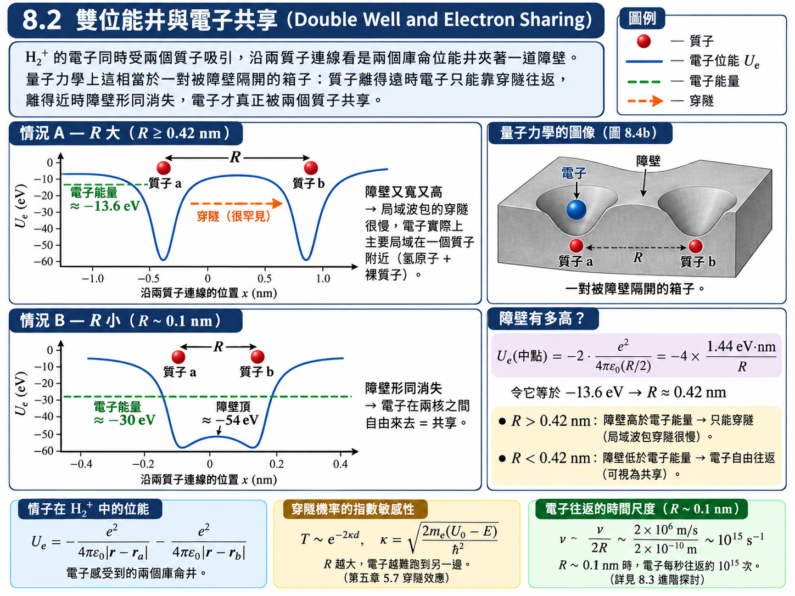
假設與已知 (Assumptions & Preliminaries)#
【已知 1】 氫原子 \(1s\) 波函數 (Hydrogen \(1s\) wave function)： 第六章表 6.1 的結果，此處直接引用。
\[\psi_{100}\left( r \right) = \frac{1}{\sqrt{\pi}\,a_0^{3/2}}e^{-r/a_0}, \qquad \frac{d\psi_{100}}{dr} = -\frac{\psi_{100}}{a_0}\]\(a_0\) : 波耳半徑 (Bohr radius)，\([\text{m}]\)，\(a_0 \approx 5.29 \times 10^{-11} \ \text{m}\)
\(r\) : 電子到質子的距離 (Electron–proton distance)，\([\text{m}]\)
【已知 2】 線性組合與近似基底 (Linear combination and approximate basis)： 同一哈密頓量的含時解可線性疊加；但孤立原子的軌域不是雙中心分子哈密頓量的精確本徵函數。以下採 LCAO，以兩個 \(1s\) 軌域的線性組合近似分子軌域，係數需由對稱性、歸一化與能量計算決定。
\[\psi = c_1\psi_a + c_2\psi_b\]\(c_1, c_2\) : 組合係數 (Combination coefficients)，\([\text{無單位}]\)
【假設 1】 固定雙中心的鏡射對稱 (Mirror symmetry)： 兩個相同質子固定在對稱位置，且無破壞此對稱性的外場，因此電子哈密頓量與鏡射算符 \(P\) 對易。選取兩者的共同本徵態；由 \(P^2=1\)，鏡射本徵值只能是 \(\pm1\)。一般疊加態不必具有固定的鏡射奇偶性。
\[[H,P]=0,\quad P^2=1,\quad P\psi=\eta\psi \quad\Longrightarrow\quad \eta=\pm1,\quad \psi(P\vec r)=\pm\psi(\vec r).\]\(P\) : 對兩質子中垂面的鏡射 (Reflection through the mid-plane)，把 \(z\) 變成 \(-z\)
註：取 \(+\) 號者稱為對稱 (symmetric)，取 \(-\) 號者稱為反對稱 (antisymmetric)。
【定義 1】 原子軌域與分子軌域 (Atomic and molecular orbitals)： 把兩個質子放在 \(z\) 軸上、原點取在兩者中點。
\[\begin{split}\begin{gather*} \vec{r}_a &\overset{\text{def}}{=}& +\frac{R}{2}\hat{z}, \qquad \vec{r}_b \overset{\text{def}}{=} -\frac{R}{2}\hat{z} \\ \psi_a\left( \vec{r} \right) &\overset{\text{def}}{=}& \psi_{100}\left( \left| \vec{r} - \vec{r}_a \right| \right), \qquad \psi_b\left( \vec{r} \right) \overset{\text{def}}{=} \psi_{100}\left( \left| \vec{r} - \vec{r}_b \right| \right) \\ \psi_S &\overset{\text{def}}{=}& \psi_a + \psi_b \\ \psi_A &\overset{\text{def}}{=}& \psi_a - \psi_b \end{gather*}\end{split}\]\(\psi_a, \psi_b\) : 以質子 \(a\)、\(b\) 為中心的氫原子 \(1s\) 軌域 (Atomic \(1s\) orbitals)，\([\text{m}^{-3/2}]\)
\(\psi_S, \psi_A\) : 對稱與反對稱的分子軌域（未歸一化）(Symmetric / antisymmetric molecular orbitals)，\([\text{m}^{-3/2}]\)
註：鏡射 \(P\) 把 \(\vec{r}_a\) 映到 \(\vec{r}_b\)，故 \(\psi_a\left( P\vec{r} \right) = \psi_b\left( \vec{r} \right)\)、\(\psi_b\left( P\vec{r} \right) = \psi_a\left( \vec{r} \right)\)。
【已知 3】 一階泰勒展開 (First-order Taylor expansion)： 適用於位移 \(\vec{\delta}\) 很小的情形。
\[f\left( \vec{r} - \vec{\delta} \right) \approx f\left( \vec{r} \right) - \vec{\delta}\cdot\nabla f\left( \vec{r} \right)\]
推導：對稱與反對稱的分子軌域#
(a) 兩種組合恰好滿足【假設 1】的兩種符號：
(b) 機率密度。展開平方後，差別全在交叉項：
交叉項 \(2\psi_a\psi_b\) 只有在兩個原子軌域重疊 (overlap) 的地方才不為零，也就是兩個質子之間。在中點，兩個質子等距，\(\psi_a = \psi_b\)：
以上是未歸一化組合的振幅平方，用來辨識交叉項與節面；不能直接當成兩個歸一化狀態的機率比。令重疊積分 \(S_{ab}=\int\psi_a^*\psi_b\,dV\)（此處軌域取實數），則歸一化組合為
檢查： 分母來自 \(\int|\psi_a\pm\psi_b|^2dV=2\pm2S_{ab}\)。反對稱組合的中垂面節點在歸一化後仍保留；當 \(S_{ab}\to1\) 時，反對稱組合須取適當極限，不能直接代入分母。
(c) \(R \to 0\) 的極限。對稱組合直接變成 \(2\psi_{100}\)，沒有節面，是 \(s\) 型；反對稱組合要用【已知 3】展開：
（倒數第二步用到 \(r = \left( x^2+y^2+z^2 \right)^{1/2}\) 故 \(\partial r/\partial z = z/r\)，最後一步用到第六章的 \(z = r\cos\theta\)。）角度部分是 \(\cos\theta\)，正是第六章表 6.1 中 \(\Theta_{10} \propto \cos\theta\) 的形狀，也就是 \(l = 1\)、\(m_l = 0\) 的 \(p_z\) 型。
在電子哈密頓量的合核極限，核電荷趨近 \(+2e\)，相應精確電子態可連到 \(\mathrm{He}^+\) 的 \(1s\) 與 \(2p\) 態。上面的固定氫 \(1s\) 基底推導只顯示 \(s\) 型與 \(p_z\) 型的角向特徵，不能當作精確的 \(\mathrm{He}^+\) 徑向波函數；核間排斥亦使整個分子的總能量在 \(R\to0\) 發散。
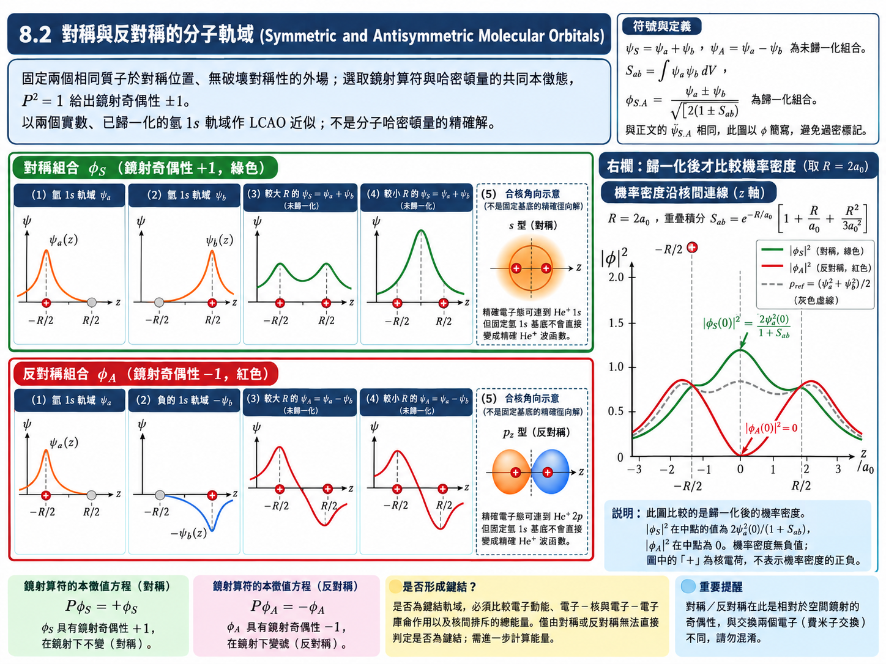
【物理知識回顧】 在這組同相 \(1s\) 基底中，對稱組合增加兩核間電子密度，反對稱組合具有中垂面節點。 這提供鍵結與反鍵結的直覺，但是否鍵結仍須比較總能量，包含電子動能與核間排斥。不能把「對稱必鍵結」推廣成所有軌域及分子的通則。
要特別注意：這裡講的「對稱／反對稱」是軌道（空間）波函數，不是總波函數。\(\text{H}_2^+\) 只有一個電子，沒有交換對稱的限制，兩種軌道都可以；但到了兩個電子的 \(\text{H}_2\)，第七章的包立不相容原理要求總波函數（軌道 \(\times\) 自旋）必須反對稱——軌道對稱時，自旋就必須反對稱。這件事留到 8.4 處理。
8.3 H₂⁺ 分子離子 (The H₂⁺ Molecular Ion)#
上一節只從形狀判斷 \(\psi_S\) 比較適合鍵結；這一節把能量算出來，確認它真的會形成穩定的分子。\(\text{H}_2^+\) 只有一個電子，沒有電子與電子之間的作用，是唯一一個可以精確求解的分子，因此所有分子鍵結的觀念都可以先在它身上看清楚。
\(\text{H}_2^+\) 的總能量由兩部分組成：
質子位能 \(U_p\)：兩個質子之間的庫侖排斥，越靠近越排斥。
電子能量 \(E_e\)：電子與兩個質子之間的作用（含電子的動能）。
\(U_p\) : 兩質子之間的庫侖位能 (Proton–proton potential energy)，\([\text{eV}]\)
\(R\) : 兩質子的間距 (Proton separation)，\([\text{nm}]\)
假設與已知 (Assumptions & Preliminaries)#
【已知 1】 \((8.1)\) 式： 質子位能，由 8.1【已知 1】取 \(q_1 = q_2 = +e\) 得到。
\[U_p = \frac{e^2}{4\pi\varepsilon_0 R}\]【假設 1】 原子核固定近似（波恩–歐本海默近似）(Born–Oppenheimer approximation)： 質子質量約為電子的 \(1836\) 倍，移動得慢得多。因此可以先把 \(R\) 當成固定參數，對每一個 \(R\) 求出電子的能量 \(E_e(R)\)，再加上質子位能，得到系統的總能量曲線。
\[E^{\text{total}}\left( R \right) = E_e\left( R \right) + U_p\left( R \right)\]\(E_e(R)\) : 原子核間距為 \(R\) 時電子的能量 (Electronic energy)，\([\text{eV}]\)
\(E^{\text{total}}(R)\) : \(\text{H}_2^+\) 的總能量 (Total energy of \(\text{H}_2^+\))，\([\text{eV}]\)
【已知 2】 氫原子能階 (Hydrogen energy levels)： 第六章 \((6.16)\) 式，此處直接引用。
\[E_n = -\frac{me^4}{32\pi^2\varepsilon_0^2\hbar^2}\left( \frac{1}{n^2} \right) = \frac{E_1}{n^2}, \qquad E_1 \approx -13.6 \ \text{eV}\]【已知 3】 8.2 的極限結果： \(R \to 0\) 時，\(\psi_S \to \text{He}^+\) 的 \(1s\)、\(\psi_A \to \text{He}^+\) 的 \(2p\)；\(R \to \infty\) 時，電子只能跟著其中一個質子。
【推導 1】 類氫離子的能階 (Energy levels of a hydrogen-like ion)： 原子核帶電 \(+Ze\)、外面只有一個電子的離子（如 \(\text{He}^+\) 的 \(Z = 2\)）。第六章推導中 \(e^2\) 只透過庫侖位能出現，故把位能中的 \(e^2\) 換成 \(Ze^2\)，\(E_n\) 中的 \(e^4 = \left( e^2 \right)^2\) 就變成 \(\left( Ze^2 \right)^2\)：
\[\begin{split}\begin{gather*} U = -\frac{e^2}{4\pi\varepsilon_0 r} &\longrightarrow& U = -\frac{Ze^2}{4\pi\varepsilon_0 r} \\ E_n &\overset{\text{已知 2}}{=}& -\frac{m\left( Ze^2 \right)^2}{32\pi^2\varepsilon_0^2\hbar^2}\left( \frac{1}{n^2} \right) \\ &=& Z^2\,\frac{E_1}{n^2} \end{gather*}\end{split}\]\(Z\) : 原子核的電荷數 (Nuclear charge number)，\([\text{無單位}]\)
推導：兩個極限#
(a) \(R \to \infty\)：電子不論跟左邊或右邊的質子，都是一顆基態氫原子；另一顆質子是裸的、離得無限遠，質子位能為零。兩種對稱性此時能量相同：
(b) \(R \to 0\)：兩個質子合成 \(Z = 2\) 的原子核。電子能量由【推導 1】給出，但質子位能發散：
兩端都確定之後，中間的曲線就是解薛丁格方程式（或數值計算）的結果，畫成圖 8.7。
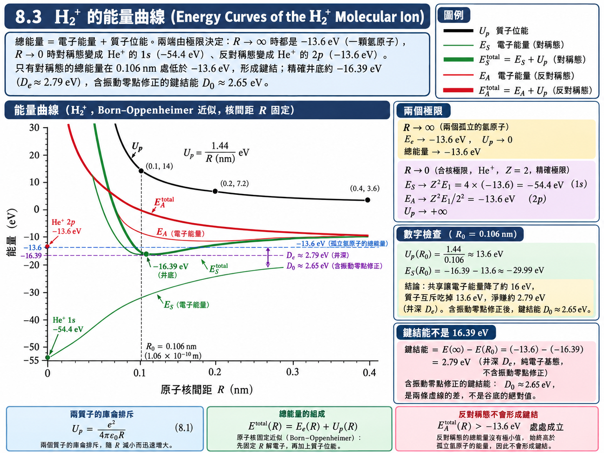
讀圖 8.7#
圖中有五條曲線：質子位能 \(U_p\)；對稱態與反對稱態的電子能量 \(E_S\)、\(E_A\)；以及兩者各自加上 \(U_p\) 的總能量 \(E_S^{\text{total}}\)、\(E_A^{\text{total}}\)。橫軸是原子核間距 \(R\)，縱軸是能量。
反對稱態：\(E_A^{\text{total}} = E_A + U_p\) 在任何 \(R\) 都高於 \(-13.6 \ \text{eV}\)，沒有任何一點的能量比兩者分開時低。由 8.1【假設 1】，不會形成穩定的鍵結。
對稱態：\(E_S^{\text{total}} = E_S + U_p\) 有一個極小值，位在
\[R_0 = 1.06 \times 10^{-10} \ \text{m} = 0.106 \ \text{nm}, \qquad E_S^{\text{total}}\left( R_0 \right) \approx -16.3 \ \text{eV}\]這比 \(-13.6 \ \text{eV}\) 低，故會形成穩定的 \(\text{H}_2^+\)，其鍵結能為
\[\begin{split}\begin{gather*} E_b &\overset{\text{8.1 定義 1}}{=}& E\left( \infty \right) - E\left( R_0 \right) \\ &=& \left( -13.6 \ \text{eV} \right) - \left( -16.3 \ \text{eV} \right) \\ &\approx& 2.65 \ \text{eV} \end{gather*}\end{split}\]
鍵結能是 \(2.65 \ \text{eV}\)，不是 \(16.3 \ \text{eV}\)——它是兩條虛線（\(-13.6\) 與 \(-16.3\)）之間的差，代表「因為形成鍵結，能量比分開時低了多少」。
數字檢查： 在平衡位置，質子之間的排斥有多大？
被兩個質子共享的電子，能量從 \(-13.6 \ \text{eV}\) 降到約 \(-30 \ \text{eV}\)，足足降了約 \(16 \ \text{eV}\)；但兩個質子靠近所付出的排斥能約 \(13.6 \ \text{eV}\)，兩者相抵，淨賺的就是 \(2.65 \ \text{eV}\) 的鍵結能。這就是「膠水」的定量版本。
【進階探討：電子在兩個質子之間跳得多快？】
8.2 說電子會在兩個質子之間穿隧往返；這個往返的頻率其實可以從圖 8.7 讀出來。電子一開始若集中在質子 \(a\) 附近，它的波函數是 \(\psi_a = \frac{1}{2}\left( \psi_S + \psi_A \right)\)，是兩個能量本徵態的疊加。這和第六章 6.8 節的兩態疊加完全同型：機率分佈會以頻率
在 \(a\)、\(b\) 之間來回擺盪。在 \(R \approx 0.1 \ \text{nm}\) 附近，由圖 8.7 粗略讀出 \(E_A - E_S \approx 10 \ \text{eV}\)，故 \(\nu_{\text{往返}} \approx 10 \ \text{eV} / \left( 4.14 \times 10^{-15} \ \text{eV}\cdot\text{s} \right) \approx 2 \times 10^{15} \ \text{Hz}\)——電子每秒在兩個質子之間往返約 \(10^{15}\) 次，說它「同時屬於兩個質子」毫不為過。反之，當 \(R\) 很大時，\(E_S\) 與 \(E_A\) 都趨近 \(-13.6 \ \text{eV}\)，兩者的差呈指數地縮小，往返一次所需的時間也隨之呈指數地變長。
【物理知識回顧】 走一遍 \(\text{H}_2^+\) 的目的，是看清楚任何分子能不能形成鍵結的判斷流程：對兩個（或更多個）原子核的各種組態，算出電子能量加上原子核之間的排斥，看看能不能找到某個距離或排列，使總能量低於把所有原子核分開時的能量。有，就有鍵結；沒有，就不會鍵結。實際做理論計算預測一群原子會不會形成分子時，就是在畫這樣的曲線——只是 \(\text{H}_2^+\) 只有一個電子，是其中最簡單、甚至可以得到精確解的一個。
8.4 氫分子 (The Hydrogen Molecule)#
在 \(\text{H}_2^+\) 上再加一個電子，就是氫分子 \(\text{H}_2\)：兩個原子核、兩個電子。實驗量到
\(\text{H}_2^+\) 有一個電子時鍵結能是 \(2.65 \ \text{eV}\)；多一個電子，是不是就變成 \(2 \times 2.65 = 5.3 \ \text{eV}\)？不是。兩個電子各自都受到兩個質子的吸引，但兩個電子之間多了一份互相排斥，所以總鍵結能比 \(5.3 \ \text{eV}\) 少一些，只有 \(4.5 \ \text{eV}\)。另一方面，兩個電子當膠水比一個電子黏得更緊，所以鍵長從 \(0.106 \ \text{nm}\) 縮短為 \(0.074 \ \text{nm}\)。
\(\text{H}_2\) 比 \(\text{H}_2^+\) 多出來的真正新東西是自旋 (spin)。有兩個電子，就必須考慮兩個電子交換時波函數的對稱性。
假設與已知 (Assumptions & Preliminaries)#
【已知 1】 包立不相容原理的波函數形式 (Exclusion principle, antisymmetric form)： 第七章 7.3 節的結論。交換兩個電子的全部座標（空間與自旋）時，系統的總波函數必須變號。
\[\Psi\left( 2, 1 \right) = -\Psi\left( 1, 2 \right)\]\(\Psi(1, 2)\) : 兩電子系統的總波函數 (Total two-electron wave function)
\(1, 2\) : 分別代表電子 1、電子 2 的全部座標（位置與自旋）
【假設 1】 空間與自旋可分離 (Separation of space and spin)： 氫是輕原子，自旋與軌道運動之間的耦合極弱，總波函數可以寫成「軌道部分 \(\times\) 自旋部分」。
\[\Psi\left( 1, 2 \right) = \psi\left( 1, 2 \right)\,s\left( 1, 2 \right)\]\(\psi(1, 2)\) : 軌道（空間）波函數 (Orbital wave function)
\(s(1, 2)\) : 自旋波函數 (Spin wave function)
【定義 1】 兩電子的自旋波函數 (Two-electron spin functions)： 以 \(\uparrow\)、\(\downarrow\) 表示單一電子 \(m_s = +\frac{1}{2}\)、\(-\frac{1}{2}\) 的自旋態。
\[\begin{split}\begin{gather*} s_A &\overset{\text{def}}{=}& \frac{1}{\sqrt{2}}\left[ \uparrow\left( 1 \right)\downarrow\left( 2 \right) - \downarrow\left( 1 \right)\uparrow\left( 2 \right) \right] \\ s_S &\overset{\text{def}}{=}& \uparrow\left( 1 \right)\uparrow\left( 2 \right), \quad \frac{1}{\sqrt{2}}\left[ \uparrow\left( 1 \right)\downarrow\left( 2 \right) + \downarrow\left( 1 \right)\uparrow\left( 2 \right) \right], \quad \downarrow\left( 1 \right)\downarrow\left( 2 \right) \end{gather*}\end{split}\]\(s_A\) : 反對稱自旋態，總自旋 \(S = 0\)，只有一種，稱為單重態 (singlet)——兩個自旋反平行
\(s_S\) : 對稱自旋態，總自旋 \(S = 1\)，共三種，稱為三重態 (triplet)——兩個自旋平行
交換性質：\(s_A(2,1) = -s_A(1,2)\)，\(s_S(2,1) = +s_S(1,2)\)
【已知 2】 8.2 的結論： 對稱軌道 \(\psi_S\) 把電子堆在兩核之間，能形成鍵結；反對稱軌道 \(\psi_A\) 不能。對兩電子系統，軌道波函數同樣有對稱與反對稱兩種：
\[\psi_S\left( 2, 1 \right) = +\psi_S\left( 1, 2 \right), \qquad \psi_A\left( 2, 1 \right) = -\psi_A\left( 1, 2 \right)\]
推導：哪些組合是被允許的#
把【假設 1】的四種搭配逐一交換兩個電子，檢查是否滿足【已知 1】：
(a) 對稱軌道 \(\times\) 反對稱自旋：
(b) 反對稱軌道 \(\times\) 對稱自旋：
(c) 對稱 \(\times\) 對稱、反對稱 \(\times\) 反對稱：交換後總波函數不變號，違反【已知 1】，自然界中不存在。
因此兩個電子只有兩種選擇，而且軌道的對稱性被自旋鎖死：
自旋 |
總波函數 |
軌道 |
鍵結 |
圖 8.8 |
|---|---|---|---|---|
平行（\(S = 1\)，三重態） |
\(\Psi\left( 1, 2 \right) = \psi_A\,s_S\) |
反對稱，兩核之間電子少 |
不鍵結 |
\(E_A\)：一路排斥 |
反平行（\(S = 0\)，單重態） |
\(\Psi\left( 1, 2 \right) = \psi_S\,s_A\) |
對稱，兩核之間電子多 |
鍵結 |
\(E_S\)：在 \(R_0\) 有極小值 \(\approx -4.5 \ \text{eV}\) |
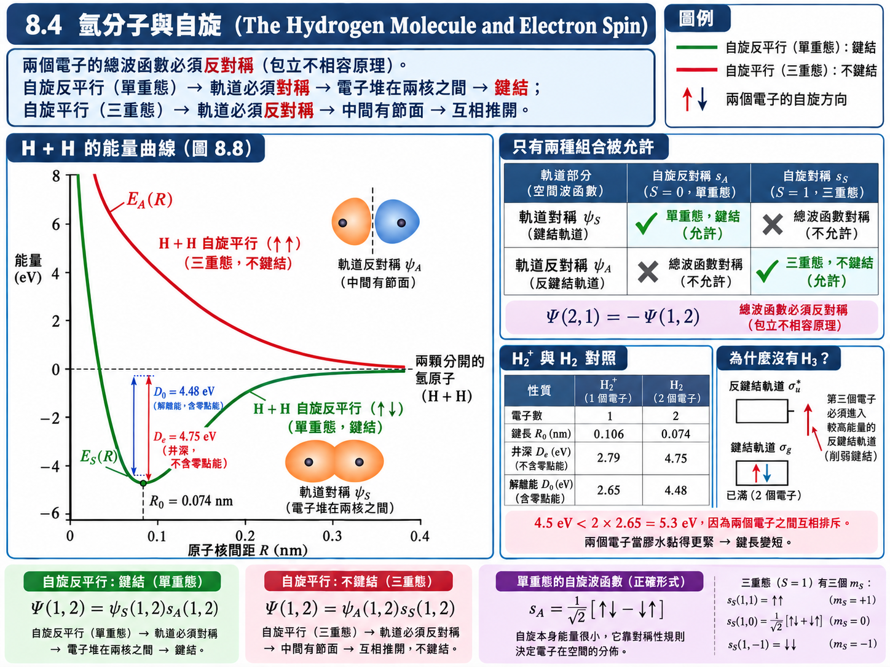
圖 8.8 的縱軸以兩顆分開的氫原子為零點。兩個電子自旋反平行時，系統沿 \(E_S\) 曲線在 \(R_0 = 0.074 \ \text{nm}\) 處達到約 \(-4.5 \ \text{eV}\) 的極小值，形成穩定的 \(\text{H}_2\)；自旋平行時，沿 \(E_A\) 曲線一路上升，任何距離都比分開時高，兩顆氫原子只會互相推開。這個結論與 \(\text{H}_2^+\) 完全平行，差別只在於現在「軌道該選哪一種」不再是自由的，而是由自旋決定。
【進階探討：為什麼沒有 \(\text{H}_3\) 與 \(\text{He}_2\)？】
同一條不相容原理也解釋了為什麼氫分子到 \(\text{H}_2\) 就停了。對稱的鍵結軌道 \(\psi_S\) 是一個空間軌道，配上兩個自旋方向，最多只能放兩個電子，而且兩者必須反平行。第三顆氫原子帶來的電子已經沒有位置可以進入鍵結軌道，只能進入反對稱的反鍵結軌道，把電子從兩核之間挖走，反而削弱鍵結——因此穩定的 \(\text{H}_3\) 不存在。同理，兩個氦原子共有四個電子：兩個進入鍵結軌道、兩個被迫進入反鍵結軌道，一加一減，淨效果沒有鍵結，所以氦以單原子氣體的形式存在。
【物理知識回顧】 值得細想的是：電子自旋的磁交互作用非常微弱，它本身產生的能量與 \(4.5 \ \text{eV}\) 相比小到可以忽略。自旋之所以能決定鍵結會不會發生，靠的不是磁力，而是「總波函數必須反對稱」這條對稱性規則——它鎖住了軌道波函數的對稱性，間接決定電子在空間中怎麼分佈，而電子的空間分佈才是決定能量的主角。單重態與三重態的區別在 8.8 的磷光中會再出現一次。
8.5 複雜分子 (Complex Molecules)#
再往上走一步，\(E(R)\) 這種曲線就很難用解析的方式畫出來了，即使用數值方法也只能一個分子一個分子地算。於是化學發展出一套模型，也就是高中化學學過的 \(p\) 軌域、\(sp^2\)、\(sp^3\) 那一套。不同的分子有不同的幾何形狀，而這些形狀取決於原子外層電子的波函數，以及它們用哪一種方式組合起來形成鍵結。
這套模型背後只有兩個條件，一個來自量子力學，一個來自熱力學：
滿足薛丁格方程式：可以使用的波函數，必須是其本徵函數的線性組合。
滿足熱力學：在所有允許的組合中，系統會選擇能量最低的那一種——對鍵結而言，就是讓兩個原子之間的電子重疊 (overlap) 越多越好的那一種。
本節的所有結果（\(p_x\)、\(p_y\) 軌域、\(\sigma\) 鍵與 \(\pi\) 鍵、混成軌域、共軛鍵）都只是這兩個條件的應用。
假設與已知 (Assumptions & Preliminaries)#
【已知 1】 氫原子 \(n = 2\) 的 \(p\) 態波函數 (Hydrogen \(2p\) wave functions)： 第六章表 6.1 的結果，此處直接引用；以下簡寫 \(\psi_{m_l} \equiv \psi_{21m_l}\)。
\[\begin{split}\begin{gather*} \psi_{0} &=& \frac{1}{4\sqrt{2\pi}\,a_0^{3/2}}\frac{r}{a_0}e^{-r/2a_0}\cos\theta \\ \psi_{\pm1} &=& \frac{1}{8\sqrt{\pi}\,a_0^{3/2}}\frac{r}{a_0}e^{-r/2a_0}\sin\theta\,e^{\pm i\phi} \end{gather*}\end{split}\]\(\psi_{m_l}\) : \(n = 2\)、\(l = 1\)、磁量子數為 \(m_l\) 的波函數 (\(2p\) wave function with magnetic quantum number \(m_l\))，\([\text{m}^{-3/2}]\)
【已知 2】 簡併本徵函數的線性組合仍是本徵函數 (Linear combinations of degenerate eigenfunctions)： 若 \(\psi_1\)、\(\psi_2\) 對同一個線性算符 \(\hat{H}\) 有相同的本徵值 \(E\)，則由 \(\hat{H}\) 的線性：
\[\begin{split}\begin{gather*} \hat{H}\left( c_1\psi_1 + c_2\psi_2 \right) &=& c_1\hat{H}\psi_1 + c_2\hat{H}\psi_2 \\ &=& c_1 E\psi_1 + c_2 E\psi_2 \\ &=& E\left( c_1\psi_1 + c_2\psi_2 \right) \end{gather*}\end{split}\]\(\hat{H}\) : 能量算符（哈密頓算符）(Hamiltonian operator)
註：第六章的能量 \((6.16)\) 只與 \(n\) 有關，故 \(\psi_{+1}\)、\(\psi_{-1}\)、\(\psi_0\) 能量相同（簡併），可以任意組合。
【已知 3】 尤拉公式 (Euler’s formula)：
\[e^{i\phi} + e^{-i\phi} = 2\cos\phi, \qquad e^{i\phi} - e^{-i\phi} = 2i\sin\phi\]【已知 4】 球座標與卡氏座標 (Spherical–Cartesian relations)： 第六章【定義 1】。
\[x = r\sin\theta\cos\phi, \qquad y = r\sin\theta\sin\phi, \qquad z = r\cos\theta\]【假設 1】 最大重疊原則 (Principle of maximum overlap)： 在所有允許的線性組合之中，鍵結沿著讓兩原子軌域重疊最多的方向形成，因為這樣的組合能量最低（8.1【假設 1】）。
推導：\(p_x\)、\(p_y\) 軌域從何而來#
\(m_l = 0\) 的 \(\psi_0\) 沒有問題，它的 \(\cos\theta\) 就是沿 \(z\) 軸的啞鈴。但 \(m_l = \pm1\) 的兩個波函數並不沿著 \(x\) 軸或 \(y\) 軸分佈：
與 \(\phi\) 無關，是一個繞著 \(z\) 軸的甜甜圈。化學上用的 \(p_x\)、\(p_y\) 其實是它們的線性組合：
\(\psi_{p_x}, \psi_{p_y}\) : 沿 \(x\)、\(y\) 軸分佈的 \(p\) 軌域 (\(p_x\) and \(p_y\) orbitals)，\([\text{m}^{-3/2}]\)
由【已知 2】，它們仍然是能量為 \(E_2\) 的解。把【已知 1】代進去：
三者是同一個函數，只差在把 \(x\)、\(y\)、\(z\) 互換（\(\psi_{p_y}\) 前面多出的 \(i\) 是一個整體相位，不影響任何機率）。於是 \(p_x\)、\(p_y\)、\(p_z\) 是三個形狀完全相同、分別沿 \(x\)、\(y\)、\(z\) 軸的啞鈴；而 \(s\) 軌域與 \(p_z\) 軌域本來就與氫原子的 \(s\)、\(p\)（\(m_l = 0\)）一樣（圖 8.9）。
註：若採用含 Condon–Shortley 相位 \((-1)^{m_l}\) 的慣例，\(\psi_{+1}\) 會多一個負號，此時 \(p_x\) 對應的是差、\(p_y\) 對應的是和，物理內容完全不變。
由上面的結果還可以讀出一個之後要用的性質：\(p\) 軌域的任意組合
就是一個指向 \(\vec{a}\) 方向的 \(p\) 軌域（\(\vec{a}\) 取實數分量）。
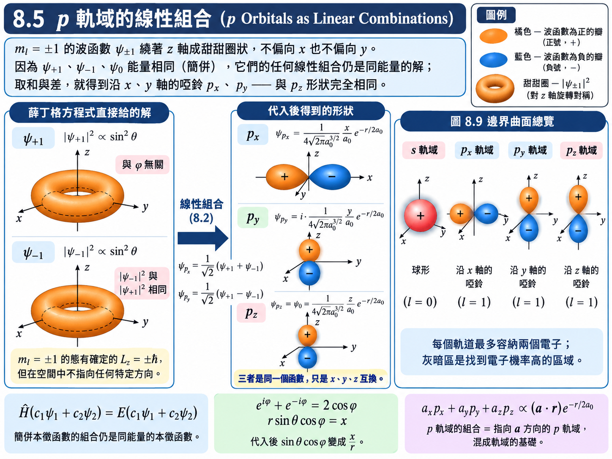
為什麼化學鍵用 \(p_x\)、\(p_y\) 而不是 \(\psi_{\pm1}\)？由【假設 1】：鍵結需要兩原子之間的電子重疊越多越好。\(\psi_{\pm1}\) 的甜甜圈分佈在 \(xy\) 平面上四面八方攤開，與鄰近原子的重疊不集中；\(p_x\)、\(p_y\) 則把電子集中在一個軸向上，正對鄰居時重疊最大。代價是 \(\psi_{p_x}\) 不再是 \(\hat{L}_z\) 的本徵態（它混合了 \(m_l = \pm1\)）——但第六章 6.6 節已經說過，沒有外場時，孤立原子的簡併 \(p\) 子空間可改用不同的正交基底；\(m_l\) 仍是對選定軸的投影量子數，而分子幾何使實軌域更便於描述方向性。
\(\sigma\) 鍵與 \(\pi\) 鍵#
有了沿座標軸分佈的軌域，就可以畫出兩個原子之間重疊最多的幾種組合（圖 8.10）。取兩原子的連線為 \(z\) 軸：
\(ss\sigma\) 鍵：兩個 \(s\) 軌域頭對頭 (head-to-head) 重疊，電子集中在兩核之間，例如 \(\text{H}_2\)。
\(pp\sigma\) 鍵：兩個 \(p_z\) 軌域沿連線頭對頭重疊。
\(pp\pi\) 鍵：兩個 \(p_x\)（或 \(p_y\)）軌域肩並肩重疊，電子分佈在連線的上方與下方，連線本身是節面。
\(\sigma\) 鍵的電子分佈對鍵軸旋轉對稱，重疊直接發生在兩核之間；\(\pi\) 鍵則在包含鍵軸的平面上有一個節面，重疊發生在兩側。因此 \(\sigma\) 鍵的重疊比 \(\pi\) 鍵多，鍵結也比較強。若兩個軌域的方向不這麼整齊（例如直接拿 \(\psi_{+1}\) 與 \(\psi_{+1}\) 去重疊），電子分佈太分散，重疊就少得多——這正是化學鍵偏好 \(p_x\)、\(p_y\)、\(p_z\) 的原因。
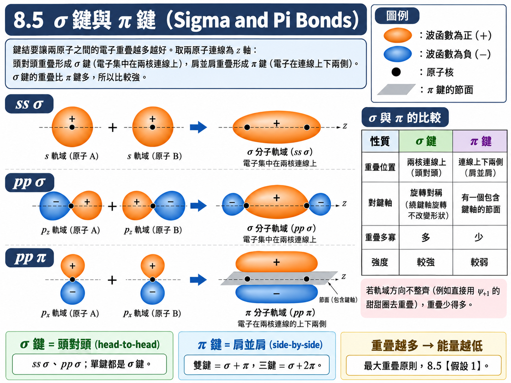
水分子：預期 \(90^\circ\)，量到 \(104.5^\circ\)#
氧的電子組態是 \(1s^2\,2s^2\,2p^4\)：\(2p\) 的三個軌域放四個電子，一個軌域填滿、兩個軌域各有一個未成對電子。最直接的想法是：這兩個未成對的 \(2p\) 電子（例如 \(p_x\)、\(p_y\)）各自與一顆氫原子的 \(1s\) 電子形成 \(sp\sigma\) 鍵（圖 8.11）。若真是如此，兩個 \(\text{O–H}\) 鍵分別沿 \(x\)、\(y\) 軸，鍵角應該是 \(90^\circ\)；就算兩顆氫原子互相排斥，也只會稍微大一點。
但實際量到的鍵角是 \(104.5^\circ\)（這個角度可以從分子的振動光譜量出來，見 8.7）。差這麼多，代表參與鍵結的不只是 \(p\) 軌域——氧原子的 \(2s\) 軌域也加入了線性組合。
推導：混成軌域的鍵角#
【定義 1】 \(sp^3\) 混成軌域 (\(sp^3\) hybrid orbitals)： 由同一原子的一個 \(s\) 與三個 \(p\) 軌域組合出四個新的軌域（圖 8.12）。
\[\begin{split}\begin{gather*} h_1 &\overset{\text{def}}{=}& \frac{1}{2}\left( \psi_s + \psi_{p_x} + \psi_{p_y} + \psi_{p_z} \right) \\ h_2 &\overset{\text{def}}{=}& \frac{1}{2}\left( \psi_s + \psi_{p_x} - \psi_{p_y} - \psi_{p_z} \right) \\ h_3 &\overset{\text{def}}{=}& \frac{1}{2}\left( \psi_s - \psi_{p_x} + \psi_{p_y} - \psi_{p_z} \right) \\ h_4 &\overset{\text{def}}{=}& \frac{1}{2}\left( \psi_s - \psi_{p_x} - \psi_{p_y} + \psi_{p_z} \right) \end{gather*}\end{split}\]\(\psi_s\) : 同一殼層的 \(s\) 軌域 (\(s\) orbital)，\([\text{m}^{-3/2}]\)
\(h_i\) : 第 \(i\) 個 \(sp^3\) 混成軌域 (\(sp^3\) hybrid orbital)，\([\text{m}^{-3/2}]\)
註：\(s\) 與 \(p\) 能量相近但不相等（多電子原子），混成需要付出一點能量；之所以值得，是因為混成後能形成更多、更強的鍵，總能量反而更低（8.1【假設 1】）。
(a) 四個混成軌域彼此正交。以 \(h_1\)、\(h_2\) 為例，利用 \(\psi_s\)、\(\psi_{p_x}\)、\(\psi_{p_y}\)、\(\psi_{p_z}\) 本身彼此正交且歸一：
(b) 每個混成軌域的 \(p\) 部分係數 \(\left( a_x, a_y, a_z \right)\) 就是它指向的方向（前面推得的 \(\left( \vec{a}\cdot\vec{r} \right)\) 性質）：\(h_1\) 指向 \(\left( 1, 1, 1 \right)\)、\(h_2\) 指向 \(\left( 1, -1, -1 \right)\)。兩者的夾角為
四個方向兩兩夾 \(109.5^\circ\)，正好指向正四面體的四個頂點（四面體的四個面都是三角形，與底面是正方形的金字塔不同）。
【定義 2】 \(sp^2\) 混成軌域 (\(sp^2\) hybrid orbitals)： 由一個 \(s\) 與兩個 \(p\)（\(p_x\)、\(p_y\)）組合出三個新軌域，\(p_z\) 保持不參與。
\[\begin{split}\begin{gather*} h_1 &\overset{\text{def}}{=}& \frac{1}{\sqrt{3}}\psi_s + \sqrt{\frac{2}{3}}\,\psi_{p_x} \\ h_2 &\overset{\text{def}}{=}& \frac{1}{\sqrt{3}}\psi_s - \frac{1}{\sqrt{6}}\psi_{p_x} + \frac{1}{\sqrt{2}}\psi_{p_y} \\ h_3 &\overset{\text{def}}{=}& \frac{1}{\sqrt{3}}\psi_s - \frac{1}{\sqrt{6}}\psi_{p_x} - \frac{1}{\sqrt{2}}\psi_{p_y} \end{gather*}\end{split}\](c) \(sp^2\) 的鍵角。\(h_1\) 指向 \(\left( \sqrt{2/3}, 0 \right)\)、\(h_2\) 指向 \(\left( -1/\sqrt{6}, 1/\sqrt{2} \right)\)：
三個 \(sp^2\) 軌域在同一平面上兩兩夾 \(120^\circ\)，呈正三角形；剩下的 \(p_z\) 垂直於這個平面。
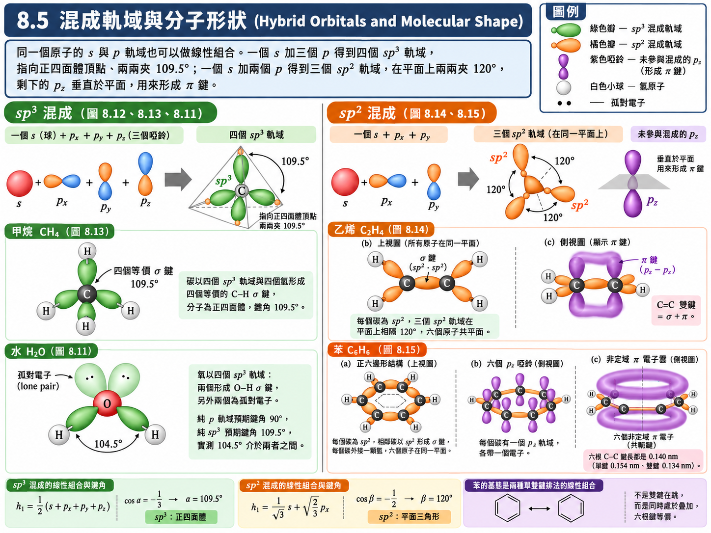
回到水分子與甲烷#
水 \(\text{H}_2\text{O}\)： 氧的四個 \(sp^3\) 軌域放六個價電子——兩個軌域各放兩個電子（孤對電子 (lone pair)，不參與鍵結），另外兩個軌域各放一個電子，與兩顆氫形成 \(\sigma\) 鍵。純 \(sp^3\) 的預測是 \(109.5^\circ\)，但孤對電子集中在氧原子附近，對鍵結電子的排斥比鍵結電子之間的排斥更強，把兩個 \(\text{O–H}\) 鍵擠近一些，於是量到 \(104.5^\circ\)。真實的鍵角落在「純 \(p\) 軌域」的 \(90^\circ\) 與「純 \(sp^3\)」的 \(109.5^\circ\) 之間，代表真實的軌域是部分混成的——兩種圖像各自從一端逼近同一個答案。
甲烷 \(\text{CH}_4\)： 碳的價電子是 \(2s^2\,2p^2\)，共四個。形成 \(sp^3\) 之後，四個價電子剛好一個軌域分到一個，各自與一顆氫形成 \(\sigma\) 鍵（圖 8.13）。四個鍵完全等價，沒有孤對電子來擠壓，因此甲烷是最完整、最對稱的 \(sp^3\) 結構，鍵角恰為 \(109.5^\circ\)，與實驗一致。
乙烯：\(sp^2\) 與 \(\pi\) 鍵#
乙烯 \(\text{C}_2\text{H}_4\) 中，每個碳只需與三個原子鍵結（另一個碳與兩個氫）。若仍用 \(sp^3\)，會有一個軌域沒有東西可以鍵結，能量不是最低。能量最低的選擇是只讓 \(s\) 與兩個 \(p\) 混成 \(sp^2\)：三個 \(sp^2\) 軌域在平面上呈 \(120^\circ\)，分別形成一個 \(\text{C–C}\) 與兩個 \(\text{C–H}\) 的 \(\sigma\) 鍵（圖 8.14(b)）。
碳有四個價電子，用掉三個在 \(sp^2\) 上，每個碳還剩一個電子留在未參與混成的 \(p_z\) 軌域（垂直於分子平面）。兩個碳的 \(p_z\) 肩並肩重疊，形成一個 \(\pi\) 鍵（圖 8.14(c)）。所以 \(\text{C}=\text{C}\) 雙鍵 \(=\) 一個 \(\sigma\) 鍵 \(+\) 一個 \(\pi\) 鍵；而 \(\pi\) 鍵要求兩個 \(p_z\) 互相平行，這把六個原子全部鎖在同一個平面上（圖 8.14(a)）。依同樣的邏輯，乙炔 \(\text{C}_2\text{H}_2\) 中每個碳只需鍵結兩個原子，使用 \(sp\) 混成（\(180^\circ\)，直線形），剩下兩個 \(p\) 軌域形成兩個 \(\pi\) 鍵，構成三鍵。
苯與共軛鍵#
苯 \(\text{C}_6\text{H}_6\) 曾經困擾化學家一段時間：由分子量知道它有六個碳、六個氫，每個碳必須有四個鍵，氫只有一個鍵，怎麼排都拼不出一個穩定的鏈狀結構——就像在排火柴棒卻總是對不起來。據說凱庫勒 (Kekulé) 某天夢到一條蛇咬住自己的尾巴，醒來後想到碳鏈可以頭尾相接成環。這則軼事真假難考，但環狀結構確實是答案。
成環之後，每個碳以 \(sp^2\) 與兩個相鄰的碳、一個氫形成 \(\sigma\) 鍵，\(120^\circ\) 的鍵角恰好圍成正六邊形（圖 8.15(a)）。每個碳還剩一個電子在 \(p_z\) 軌域上（圖 8.15(b)），六個 \(p_z\) 電子要形成 \(\pi\) 鍵。問題是：跟哪一個鄰居配對？ 若三個 \(\pi\) 鍵固定在其中三根 \(\text{C–C}\) 上，苯環應該有三根雙鍵、三根單鍵，光譜與鍵長量測會看到兩種不同的 \(\text{C–C}\) 鍵（單鍵約 \(0.154 \ \text{nm}\)、雙鍵約 \(0.134 \ \text{nm}\)）。
實驗結果卻是：六根 \(\text{C–C}\) 鍵完全相同，長度都是約 \(0.140 \ \text{nm}\)，介於單鍵與雙鍵之間。這表示六個 \(\pi\) 電子並不屬於任何特定的一根鍵，而是形成一個環繞整個分子、位於平面上下兩側的連續電子雲（圖 8.15(c)）——這六個電子是非定域的 (delocalized)。這種鍵結稱為共軛鍵 (conjugated bond)，苯環是其中最典型的例子。
化學上常把它描述成「雙鍵在六根鍵之間跳來跳去」。量子力學的說法更精確：基態是兩種單雙鍵交替排法的線性組合，正如 8.2 的 \(\psi_S\) 是 \(\psi_a\) 與 \(\psi_b\) 的組合——電子不是在兩種排法之間隨時間來回跳，而是同時處於兩者的疊加，因此六根鍵完全等價，能量也比任何一種單一排法更低。
【物理知識回顧】 本節的所有「化學規則」——\(p_x\)、\(p_y\)、\(p_z\) 軌域、\(\sigma\) 與 \(\pi\) 鍵、\(sp^3\) 的 \(109.5^\circ\)、\(sp^2\) 的 \(120^\circ\)、苯環的共軛——都是同一套邏輯的產物：(1) 用氫原子型本徵函數的線性組合當材料，(2) 從中挑出能量最低、重疊最多的組合。 高中化學背的規則，在這裡都成了推得出來的結果。
對學電子的人而言，共軛鍵特別值得記住。非定域的 \(\pi\) 電子不被綁在單一根鍵上，可以沿著共軛結構移動，這是導電高分子（2000 年諾貝爾化學獎）、有機半導體與 OLED 的基礎。分子會不會導電，很大一部分取決於它有沒有這種長距離的共軛結構。
8.6 轉動能階 (Rotational Energy Levels)#
不論透過哪一種鍵結，分子最後都成了一個有形狀的東西。原子只有一顆，談不上形狀；分子由好幾顆原子組成，於是比原子多了兩種自由度：
振動 (vibration)：原子之間雖然有一個平衡鍵長，但只要有溫度，原子就會在平衡位置附近來回振動，有點像彈簧——這是單一原子不可能有的，因為它沒有第二顆原子。
轉動 (rotation)：整個分子可以繞著質心轉來轉去。
前幾章處理原子時，只有一種能態：電子能態 (electronic state)，也就是電子與原子核之間的關係；X 射線、原子光譜都是電子能態之間的躍遷。到了分子，多出了振動與轉動兩種能態。三者的能量尺度差了好幾個數量級，對應的光譜剛好落在電磁波譜的三個不同區段：
能態類型 |
典型能量 |
對應波長 |
波段 |
|---|---|---|---|
轉動能態 (Rotational states) |
\(\sim 10^{-3} \ \text{eV}\) |
\(0.1 \ \text{mm} \sim 1 \ \text{cm}\) |
微波 (microwave) |
振動能態 (Vibrational states) |
\(\sim 0.1 \ \text{eV}\) |
\(1 \ \mu\text{m} \sim 0.1 \ \text{mm}\) |
紅外線 (IR) |
電子能態 (Electronic states) |
數 \(\text{eV}\) |
\(0.1 \ \mu\text{m} \sim 1 \ \mu\text{m}\) |
可見光、紫外線 |
（電子能態的尺度可以拿前面的數字對照：氫原子基態 \(-13.6 \ \text{eV}\)、\(\text{H}_2^+\) 鍵結能 \(2.65 \ \text{eV}\)，都是 eV 等級。各波段的位置可對照第二章的電磁波譜。）
另一個必須記住的基準是室溫的熱能：
\(k\) : 波茲曼常數 (Boltzmann constant)，\([\text{J}\cdot\text{K}^{-1}]\)，\(k \approx 1.381 \times 10^{-23} \ \text{J}\cdot\text{K}^{-1}\)
\(T\) : 絕對溫度 (Absolute temperature)，\([\text{K}]\)
\(kT\) 大約是環境隨手就能給一個分子的能量。往後做研究，一天到晚都會把某個能量差拿來跟 \(kT\) 比：比 \(kT\) 小很多的能階，室溫下幾乎都被激發；比 \(kT\) 大很多的能階，室溫下幾乎都待在基態。
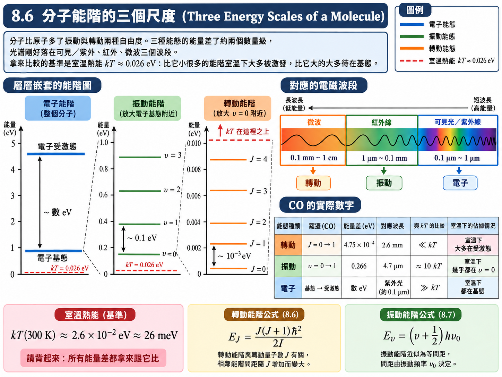
這一節先處理能量最小的轉動，下一節處理振動。
假設與已知 (Assumptions & Preliminaries)#
【假設 1】 剛性轉子 (Rigid rotor)： 雙原子分子取固定鍵長 \(R\simeq R_0\)，忽略轉動—振動耦合與離心伸長，適合較低轉動量子數。所用轉動慣量對應通過質心、垂直於鍵軸的轉軸。
【定義 1】 轉動慣量 (Moment of inertia)：
\[I \overset{\text{def}}{=} m_1 r_1^2 + m_2 r_2^2 \tag{8.3}\]\(I\) : 分子對質心的轉動慣量 (Moment of inertia about the center of mass)，\([\text{kg}\cdot\text{m}^2]\)
\(m_1, m_2\) : 兩顆原子的質量 (Atomic masses)，\([\text{kg}]\)
\(r_1, r_2\) : 兩顆原子到質心的距離 (Distances from the center of mass)，\([\text{m}]\)，\(r_1 + r_2 = R\)
【已知 1】 質心條件 (Center-of-mass condition)： 質心的定義要求兩邊的「質量 \(\times\) 距離」相等。
\[m_1 r_1 = m_2 r_2 \tag{8.4}\]【定義 2】 縮減質量 (Reduced mass)： 第四章 4.6 節（該處稱為減縮質量）已用過同一個概念處理氫原子的原子核運動。
\[m' \overset{\text{def}}{=} \frac{m_1 m_2}{m_1 + m_2} \qquad \Longleftrightarrow \qquad \frac{1}{m'} = \frac{1}{m_1} + \frac{1}{m_2} \tag{8.6}\]\(m'\) : 縮減質量 (Reduced mass)，\([\text{kg}]\)
【已知 2】 古典轉動的角動量與動能 (Classical rotation)：
\[L = I\omega \tag{8.7}\]\[E = \frac{1}{2}I\omega^2\]\(L\) : 角動量大小 (Angular momentum)，\([\text{J}\cdot\text{s}]\)
\(\omega\) : 角速度 (Angular velocity)，\([\text{rad}\cdot\text{s}^{-1}]\)
\(E\) : 轉動動能 (Rotational kinetic energy)，\([\text{J}]\)
【已知 3】 角動量的量子化 (Quantization of angular momentum)： 第六章 \((6.21)\) 式。只要是角動量，就必須滿足同一套量子化規則——軌道角動量如此，第七章的自旋如此，分子的轉動也是如此。這裡把量子數改記為 \(J\)：
\[L = \sqrt{J\left( J+1 \right)}\,\hbar, \qquad J = 0, 1, 2, 3, \dots\]\(J\) : 轉動量子數 (Rotational quantum number)，\([\text{無單位}]\)
註：剛性轉子的位能為零、\(R\) 固定，薛丁格方程式只剩角度部分，與第六章的 \((6.12)\)、\((6.13)\) 完全相同，解就是同一組 \(\Theta\Phi\)；不同的是這裡沒有徑向方程式，因此 \(J\) 沒有上限（不像 \(l \le n - 1\)）。
【已知 4】 選擇規則 (Selection rules)： 第六章 \((6.36)\) 式。偶極積分的角度部分只有在相鄰的角動量量子數之間才不為零，其數學骨架是連帶勒讓德函數的相鄰階耦合。
\[\Delta l = \pm 1\]【已知 5】 躍遷頻率 (Transition frequency)： 第六章 \((6.33)\) 式。
\[h\nu = E_{\text{上}} - E_{\text{下}}\]
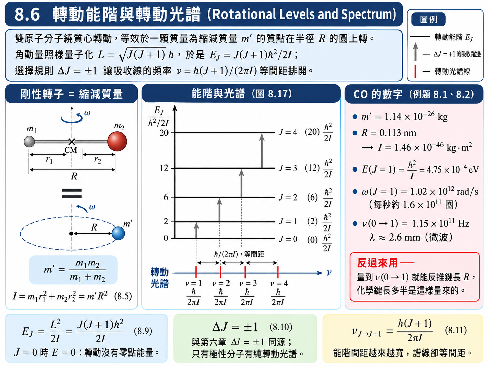
推導：轉動慣量與縮減質量#
由 \(r_1 + r_2 = R\) 與【已知 1】，先解出兩顆原子到質心的距離：
代入【定義 1】：
兩顆原子繞質心轉動，等效於一顆質量為 \(m'\) 的質點在半徑 \(R\) 的圓上轉動。這和第四章處理原子核運動的手法完全相同：多體問題的質量換成縮減質量，其他東西都不變。
推導：轉動能階#
把古典的轉動動能改寫成角動量的形式，再代入量子化條件：
\(E_J\) : 第 \(J\) 轉動能階的能量 (Rotational energy level)，\([\text{J}]\)，\([\text{eV}]\)
\(J = 0\) 時 \(E_0 = 0\)：分子不轉動。轉動能階沒有零點能量（與下一節的振動不同）。
能階間距 \(E_{J+1} - E_J \propto \left( J+1 \right)\)，越往上越寬（圖 8.17 上半）。
推導：選擇規則與轉動光譜#
轉動態的波函數就是第六章的角度函數 \(\Theta_{JM}\Phi_{M}\)（【已知 3】的註）。一個帶有永久電偶極矩的分子（例如 \(\text{CO}\)，碳端略帶正電、氧端略帶負電），其偶極矩沿著鍵軸方向 \(\hat{r}\)；計算偶極積分時，角度部分與第六章 \((6.34)\) 完全相同，因此直接套用【已知 4】：
所以轉動能階不能從 \(J = 2\) 跳到 \(4\)，也不能從 \(4\) 掉到 \(1\)；吸收時只能 \(J \to J + 1\)。由【已知 5】，這條吸收線的頻率為
\(\nu_{J \to J+1}\) : \(J \to J+1\) 的吸收頻率 (Absorption frequency)，\([\text{Hz}]\)
能階間距越往上越寬，但光譜線卻是等間距的，間隔恆為 \(\hbar / \left( 2\pi I \right)\)（圖 8.17 下半）。
註：偶極積分前面乘著永久偶極矩的大小。像 \(\text{H}_2\)、\(\text{N}_2\)、\(\text{O}_2\) 這類由兩顆相同原子組成的分子沒有永久偶極矩，因此沒有純轉動光譜；只有 \(\text{CO}\)、\(\text{HCl}\)、\(\text{H}_2\text{O}\) 這類極性分子才看得到。
例題 8.1：CO 分子的最低轉動態#
題目： 一氧化碳 (\(\text{CO}\)) 分子的鍵長 \(R\) 為 \(0.113 \ \text{nm}\)，\(^{12}\text{C}\) 與 \(^{16}\text{O}\) 的質量分別為 \(1.99 \times 10^{-26} \ \text{kg}\) 和 \(2.66 \times 10^{-26} \ \text{kg}\)。當 \(\text{CO}\) 分子處於最低轉動態時，求出 (a) 能量；(b) 角速度。
解答：
(a) 先求縮減質量與轉動慣量：
「最低轉動態」指的是最低的有轉動的能階。\(J = 0\) 時 \(E_0 = 0\)，分子根本沒有在轉，因此最低轉動態對應 \(J = 1\)：
(b) 由 \(E = \frac{1}{2}I\omega^2\)：
用 \(L = I\omega\) 交叉驗證：\(\omega = \sqrt{2}\,\hbar / I = \left( 1.414 \right)\left( 1.054 \times 10^{-34} \right) / \left( 1.46 \times 10^{-46} \right) \approx 1.02 \times 10^{12} \ \text{rad/s}\)，一致。換成每秒轉幾圈，\(f = \omega / 2\pi \approx 1.6 \times 10^{11}\) 圈／秒。
註：投影片此處寫成 \(3.23 \times 10^{11} \ \text{rad/s}\)，相當於把根號內的 \(1.04 \times 10^{24}\) 少算了一個 10 倍；以上面的交叉驗證為準。
【物理知識回顧】 \(E_{J=1} \approx 4.75 \times 10^{-4} \ \text{eV}\)，大約是 \(10^{-3} \ \text{eV}\) 等級，符合前面表格的轉動能量尺度。拿它跟室溫的 \(kT \approx 2.6 \times 10^{-2} \ \text{eV}\) 比，環境給的能量是轉動能階間距的百倍左右，所以室溫下幾乎所有 \(\text{CO}\) 分子都處在受激轉動態，而且轉得非常快（每秒 \(10^{11}\) 圈以上）。更精確地說，第 \(J\) 能階的分子數正比於 \(\left( 2J+1 \right)e^{-E_J/kT}\)（\(2J+1\) 是 \(M\) 的個數），對室溫的 \(\text{CO}\) 而言最多分子的能階約在 \(J \approx 7\)；\(J = 0\) 仍然有分子，只是只佔約 \(1\%\)。
例題 8.2：由轉動光譜求 CO 的鍵長#
題目： 在 \(\text{CO}\) 中，\(J = 0 \to J = 1\) 的吸收線發生在頻率 \(1.15 \times 10^{11} \ \text{Hz}\)，\(\text{CO}\) 分子的鍵結長度為何？
解答：
例題 8.1 是「已知鍵長求能量」，實際的實驗方向通常反過來：量光譜、反推鍵長。先由 \((8.11)\) 取 \(J = 0\) 求轉動慣量：
再由例題 8.1 的 \(m' = 1.14 \times 10^{-26} \ \text{kg}\) 與 \((8.5)\)：
這正是例題 8.1 所引用的 \(\text{CO}\) 鍵長的來源。這條吸收線的波長 \(\lambda = c/\nu \approx 2.6 \ \text{mm}\)，落在微波區。
【物理知識回顧】 化學課本裡那些鍵長是怎麼知道的？即使用電子顯微鏡，也不可能拿尺去量一根 \(0.1 \ \text{nm}\) 的化學鍵。它們大多就是像這樣從光譜倒推回去的：量到量子化能階之間的躍遷頻率，就能反算轉動慣量，再反算鍵長。這和用 X 射線繞射反推晶格常數是同一種思路。
轉動能階最廣為人知的應用大概是微波爐。水分子是極性分子，微波區的電磁波會帶動它轉動；分子轉得越劇烈，經由彼此碰撞轉成的熱就越多，而幾乎所有食物都含水，所以都能用微波加熱。嚴格來說，家用微波爐的 \(2.45 \ \text{GHz}\) 並不是「對準」水分子某一條轉動譜線——液態水中的分子擠在一起、無法自由轉動，離散的轉動譜線被碰撞抹成一大片寬頻的吸收；微波做的是讓極性水分子跟著交變電場不斷改變方向，再透過碰撞把能量變成熱。但「極性分子在微波區與電磁波交換轉動能量」這個核心圖像不變。
8.7 振動能階 (Vibrational Energy Levels)#
除了轉動，分子還可以振動。以雙原子分子為例，圖 8.18 是兩原子的位能隨原子核間距 \(R\) 變化的曲線（就是 8.3 的 \(E^{\text{total}}(R)\)）。在平衡間距 \(R_0\) 有一個最低點；分子在室溫下會在這個最低點附近來回振動。真實的位能曲線形狀複雜，但只要振動幅度不大，我們永遠可以用一條拋物線去近似它——這就是拋物線近似 (parabolic approximation)。
假設與已知 (Assumptions & Preliminaries)#
【已知 1】 泰勒展開 (Taylor expansion)： 任何夠平滑的函數都可以在某一點附近展開成冪級數。
\[U\left( R \right) = U\left( R_0 \right) + U'\left( R_0 \right)\left( R - R_0 \right) + \frac{1}{2!}U''\left( R_0 \right)\left( R - R_0 \right)^2 + \frac{1}{3!}U'''\left( R_0 \right)\left( R - R_0 \right)^3 + \cdots\]\(U(R)\) : 雙原子分子的位能 (Potential energy of the diatomic molecule)，\([\text{J}]\)
\(R_0\) : 展開點，取為平衡間距 (Expansion point, the equilibrium separation)，\([\text{m}]\)
【假設 1】 \(R_0\) 是平衡位置 (Equilibrium)： 平衡位置是位能的極小值，故一階導數為零、二階導數為正。
\[U'\left( R_0 \right) = 0, \qquad U''\left( R_0 \right) > 0\]【假設 2】 小振幅 (Small amplitude)： 振動幅度 \(\left| R - R_0 \right|\) 夠小，三次方以上的項貢獻可以忽略。
【定義 1】 力常數 (Force constant)： 位能在平衡位置的曲率。
\[k \overset{\text{def}}{=} U''\left( R_0 \right), \qquad U_0 \overset{\text{def}}{=} U\left( R_0 \right)\]\(k\) : 力常數 (Force constant)，\([\text{N}\cdot\text{m}^{-1}]\)
\(U_0\) : 位能的最低值 (Minimum potential energy)，\([\text{J}]\)
【已知 2】 古典諧振子的頻率 (Classical frequency of a harmonic oscillator)： 質量 \(m\) 的物體接在力常數 \(k\) 的彈簧上、另一端固定在牆上，其振動頻率為
\[\nu_0 = \frac{1}{2\pi}\sqrt{\frac{k}{m}} \tag{8.14}\]\(\nu_0\) : 古典振動頻率 (Classical frequency)，\([\text{Hz}]\)
\(m\) : 振動物體的質量 (Mass)，\([\text{kg}]\)
【已知 3】 量子諧振子 (Quantum harmonic oscillator)： 第五章 5.8 節的結果。位能為 \(\frac{1}{2}kx^2\)、質量為 \(m\) 的粒子，其薛丁格方程式只有在下列能量才有不發散的解；歸一化的波函數可寫成無因次變數 \(y\) 的 Hermite 函數 \(\mathcal{H}_n(y)\)。
\[\begin{split}\begin{gather*} E_n &=& \left( n + \frac{1}{2} \right)h\nu, \qquad n = 0, 1, 2, \dots \\ \psi_n\left( x \right) &=& \beta^{1/4}\mathcal{H}_n\left( y \right), \qquad y = \sqrt{\beta}\,x, \qquad \beta = \frac{m\omega}{\hbar} \end{gather*}\end{split}\]\(\psi_n(x)\) : 第 \(n\) 態的歸一化波函數 (Normalized eigenfunction)，\([\text{m}^{-1/2}]\)
\(\mathcal{H}_n(y)\) : 歸一化 Hermite 函數，\(\mathcal{H}_n(y) = \pi^{-1/4}\left( 2^n n! \right)^{-1/2}H_n(y)e^{-y^2/2}\) (Normalized Hermite function)，\([\text{無單位}]\)
\(\beta\) : 空間縮放常數 (Scaling constant)，\([\text{m}^{-2}]\)
\(\omega\) : 角頻率 (Angular frequency)，\(\omega = 2\pi\nu\)，\([\text{rad}\cdot\text{s}^{-1}]\)
【已知 4】 Hermite 函數的正交歸一與遞迴關係 (Orthonormality and recurrence of Hermite functions)： 純數學結果，分別見 Hermite 函數的正交歸一性與 Hermite 函數的遞迴關係。
\[\begin{split}\begin{gather*} \int_{-\infty}^{\infty}\mathcal{H}_{n'}\left( y \right)\mathcal{H}_n\left( y \right)dy &=& \delta_{n'n} \\ y\,\mathcal{H}_n\left( y \right) &=& \sqrt{\frac{n+1}{2}}\,\mathcal{H}_{n+1}\left( y \right) + \sqrt{\frac{n}{2}}\,\mathcal{H}_{n-1}\left( y \right) \end{gather*}\end{split}\]\(\delta_{n'n}\) : Kronecker delta，\(n' = n\) 時為 \(1\)，否則為 \(0\)
註：遞迴關係最關鍵的性質是右邊只出現 \(n \pm 1\)——乘上一個 \(y\)，只會把第 \(n\) 階推到相鄰的兩階。
【已知 5】 輻射躍遷的條件 (Condition for a radiative transition)： 第六章 6.8、6.9 節的結論：躍遷要放光（或吸光），偶極積分必須不為零。
\[\int \psi_{f}^{*}\,p\,\psi_{i}\,dx \ne 0\]\(p\) : 分子的電偶極矩 (Electric dipole moment)，\([\text{C}\cdot\text{m}]\)
\(\psi_i, \psi_f\) : 初態與末態波函數 (Initial and final states)
【假設 3】 偶極矩隨鍵長線性變化 (Dipole moment varies linearly with bond length)： 振動時兩原子的距離改變，分子的偶極矩也跟著改變；對小振幅取一階近似。
\[p\left( x \right) \approx p_0 + p_1 x, \qquad x \overset{\text{def}}{=} R - R_0, \qquad p_1 \overset{\text{def}}{=} \frac{dp}{dR}\bigg|_{R_0}\]\(p_0\) : 平衡位置的永久偶極矩 (Permanent dipole moment)，\([\text{C}\cdot\text{m}]\)
\(p_1\) : 偶極矩對鍵長的變化率 (Dipole derivative)，\([\text{C}]\)
\(x\) : 偏離平衡位置的位移 (Displacement)，\([\text{m}]\)
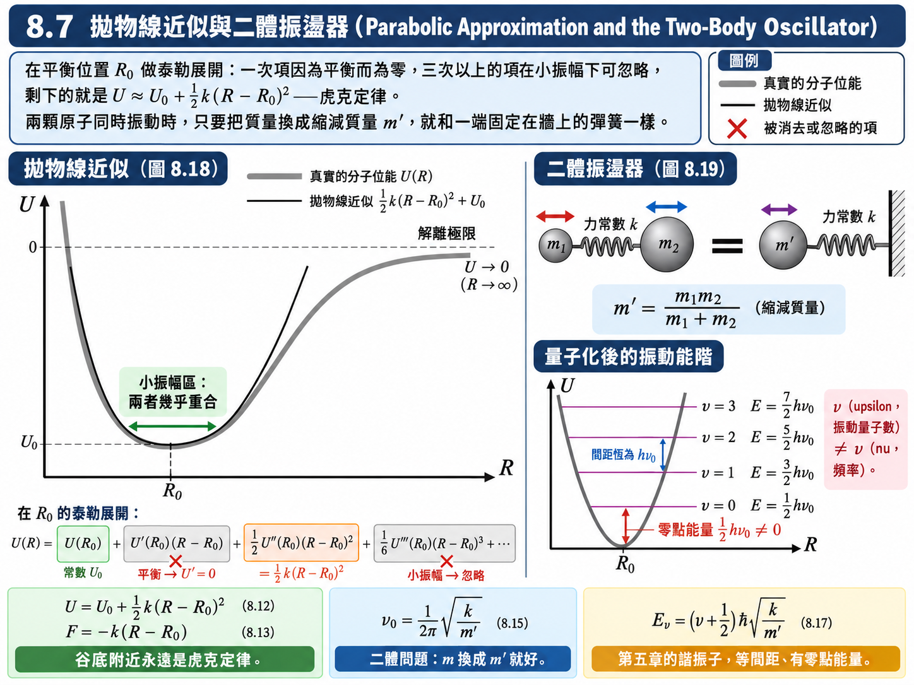
推導：拋物線近似#
對 \(R\) 微分得到力：
這正是虎克定律 (Hooke’s law)。
這個近似的威力在於：位能原本長什麼樣子已經不重要了。不論它是指數、對數還是多項式，只要是在平衡位置附近做小幅度振動，一階項必定因為平衡而消失、零階項只是常數、三階以上的項又小到可以忽略，最低次的非平凡項永遠是二次項——永遠可以當成簡諧運動。圖 8.18 中真實曲線與拋物線在谷底幾乎重合，只有離開谷底較遠時才分開。
推導：二體振盪器與縮減質量#
真實的分子不是一端固定在牆上，而是兩顆原子同時在動（圖 8.19）。設兩原子沿鍵軸的位置為 \(x_1\)、\(x_2\)，鍵長 \(R = x_2 - x_1\)。彈簧被拉長時（\(R > R_0\)），它把 \(m_1\) 往右拉、把 \(m_2\) 往左拉：
把兩式各自除以質量後相減：
這是質量為 \(m'\)、力常數為 \(k\) 的簡諧運動方程式，與【已知 2】比對，只要把 \(m\) 換成 \(m'\)：
\(m'\) : 縮減質量 (Reduced mass)，\([\text{kg}]\)
又一次看到古典力學給的最大好處：多體的運動，只要把質量換成縮減質量，其他東西都一樣。
推導：振動能階#
由 \((8.15)\)，相對座標 \(x = R - R_0\) 的運動就是一個質量 \(m'\) 的諧振子，其薛丁格方程式與第五章完全相同，因此直接引用【已知 3】，把 \(n\) 改記為振動量子數 \(\upsilon\)、\(m\) 換成 \(m'\)、\(\nu\) 換成 \(\nu_0\)：
\(E_\upsilon\) : 第 \(\upsilon\) 振動能階的能量 (Vibrational energy level)，\([\text{J}]\)，\([\text{eV}]\)
\(\upsilon\) : 振動量子數 (Vibrational quantum number)，\([\text{無單位}]\)。注意它是希臘字母 upsilon，與頻率 \(\nu\)（nu）長得很像，閱讀時要小心分辨。
\(\upsilon = 0\) 時 \(E_0 = \frac{1}{2}h\nu_0 \ne 0\)：零點能量 (zero-point energy)。分子即使在絕對零度也不會停止振動。
相鄰能階的間距恆為 \(h\nu_0\)，等間距。
本段計算前提： 同時使用簡諧振動波函數與偶極矩對位移的一階展開。\(\Delta\upsilon=\pm1\) 是此組近似下的電偶極規則；還須有 \((d\mu_{\mathrm{dip}}/dR)_{R_0}\ne0\) 才具紅外活性。此處 \(\mu_{\mathrm{dip}}\) 是偶極矩，不是縮減質量 \(\mu\)。
推導：振動的選擇規則#
由【已知 5】與【假設 3】，振動態 \(\upsilon \to \upsilon'\)（\(\upsilon' \ne \upsilon\)）的偶極積分為
（第一項是兩個不同本徵態的內積，由正交性為零。）第二項換成無因次變數 \(y = \sqrt{\beta}\,x\)，\(dx = dy/\sqrt{\beta}\)：
（此處 \(\beta = m'\omega_0/\hbar\)，\(\omega_0 = 2\pi\nu_0\)。）只有 \(\upsilon' = \upsilon \pm 1\) 時不為零：
由於能階等間距，所有 \(\Delta\upsilon = +1\) 的吸收都給出同一個頻率 \(\nu_0\)——這正是例題 8.3 可以用一條吸收線直接讀出 \(\nu_0\) 的原因。
這個推導還附帶一個條件：整個積分前面乘著 \(p_1 = dp/dR\)。若振動時分子的偶極矩根本不改變（\(p_1 = 0\)），那麼即使 \(\Delta\upsilon = \pm1\)，積分仍然為零，分子不會吸收紅外線。像 \(\text{N}_2\)、\(\text{O}_2\) 這種兩顆相同原子組成的分子，不論怎麼振動電荷分佈都左右對稱，偶極矩永遠是零——這一點在後面的溫室效應會變得非常重要。
例題 8.3：CO 的力常數與振動能階間隔#
題目： 當 \(\text{CO}\) 溶解於四氯化碳時，頻率 \(6.42 \times 10^{13} \ \text{Hz}\) 的紅外光會被吸收；四氯化碳本身在此頻率是透明的，故此吸收必定由 \(\text{CO}\) 所造成。(a) \(\text{CO}\) 分子中鍵的力常數為何？(b) 振動能階的間隔為何？
解答：
(a) 由 \((8.18)\)，吸收頻率就是 \(\nu_0\)。由例題 8.1，\(m' = 1.14 \times 10^{-26} \ \text{kg}\)；由 \((8.15)\) 解出 \(k\)：
約為 \(10 \ \text{lb/in}\)（課本原文用英制單位）。
(b) 由 \((8.16)\)，相鄰振動能階的間隔為
【物理知識回顧】 \(0.266 \ \text{eV}\) 落在 \(0.1 \ \text{eV}\) 等級，對應的波長 \(\lambda = c/\nu_0 \approx 4.7 \ \mu\text{m}\)，正是紅外線——與前面表格一致。
這個數字與轉動的情況截然相反。\(\Delta E \approx 0.266 \ \text{eV}\) 約是室溫 \(kT \approx 0.026 \ \text{eV}\) 的 10 倍，波茲曼因子 \(e^{-\Delta E/kT} \approx e^{-10.3} \approx 3 \times 10^{-5}\)。所以室溫下幾乎所有 \(\text{CO}\) 分子都待在 \(\upsilon = 0\)，只擁有零點能量。總結一句：室溫下，振動態幾乎都在基態；轉動態幾乎都在受激態。 這就是為什麼一定要把 \(kT \approx 0.026 \ \text{eV}\) 背起來。
振動與轉動能階疊在一起#
真實分子同時在振動與轉動。由於振動能階間距（\(\sim 0.1 \ \text{eV}\)）比轉動能階間距（\(\sim 10^{-3} \ \text{eV}\)）大約大兩個數量級，每一個振動能階上都疊著一整排緊密的轉動能階（圖 8.20）。圖 8.20 也顯示了拋物線近似的極限：越靠近上方，振動能階之間的距離越小，因為真實的位能曲線在大振幅時比拋物線平緩，最後收斂到解離極限。
【進階探討：振動–轉動光譜】（課本 8.7 節後半，投影片未收錄）
既然兩種能階疊在一起，一個分子的能量可以寫成兩者相加（假設兩個振動態的轉動慣量 \(I\) 相同）：
吸收紅外光時，\((8.10)\) 與 \((8.18)\) 必須同時滿足：\(\Delta\upsilon = +1\) 且 \(\Delta J = \pm 1\)。
兩邊除以 \(h\)，令 \(n\) 代表 \(J+1\) 或 \(J\)：
光譜線在 \(\nu_0\) 兩側等間距排開（高頻側稱為 R 支、低頻側稱為 P 支），正中央 \(\nu = \nu_0\) 的位置卻沒有線，因為 \(\Delta J = 0\) 是禁止的。以 \(\text{CO}\) 為例，\(\hbar/\left( 2\pi I \right) \approx 1.15 \times 10^{11} \ \text{Hz}\)，只有 \(\nu_0 = 6.42 \times 10^{13} \ \text{Hz}\) 的約 \(1/560\)，所以低解析度下看起來像單一一條吸收線，高解析度下才會展開成一整排細線。
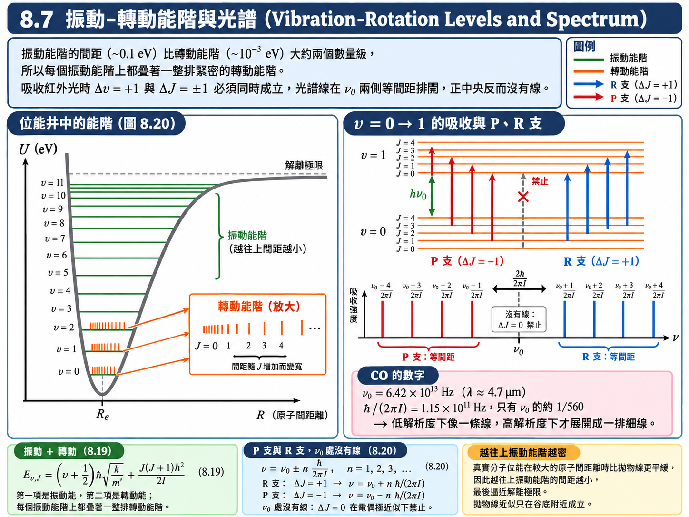
複雜分子的振動模式與溫室效應#
雙原子分子只有一種振動方式；三個原子以上的分子，振動方式就多了。每一種彼此獨立的振動方式稱為一個正常振動模式 (normal mode)，每個模式各有自己的力常數與等間距的振動能階，能量都大約在 \(0.1 \ \text{eV}\) 等級。複雜分子很難從第一原理算出每個模式的 \(k\)，但只要從光譜量出 \(k\)，代進 \((8.17)\) 就能得到該模式的能階。
\(\text{H}_2\text{O}\)（圖 8.21）：對稱彎曲 \(0.1915 \ \text{eV}\)、對稱拉伸 \(0.4527 \ \text{eV}\)、非對稱拉伸 \(0.4656 \ \text{eV}\)。一般而言，拉伸比彎曲需要更多能量。
\(\text{CO}_2\)（圖 8.22）：直線形分子。對稱彎曲 \(0.0827 \ \text{eV}\)（可以在兩個互相垂直的平面中發生）、對稱拉伸 \(0.1649 \ \text{eV}\)、非對稱拉伸 \(0.2912 \ \text{eV}\)。
\(\text{CO}_2\) 整體沒有永久偶極矩，但碳原子略帶正電、氧原子略帶負電。在對稱拉伸中，兩個氧原子同時向外、同時向內，正負電荷的中心始終重合，偶極矩一直為零（\(p_1 = 0\)），因此不能由吸收光子來激發；非對稱拉伸與對稱彎曲則會讓正負電荷中心錯開，產生振盪的電偶極，分別吸收波長 \(4.26 \ \mu\text{m}\) 與 \(15.00 \ \mu\text{m}\) 的紅外線。
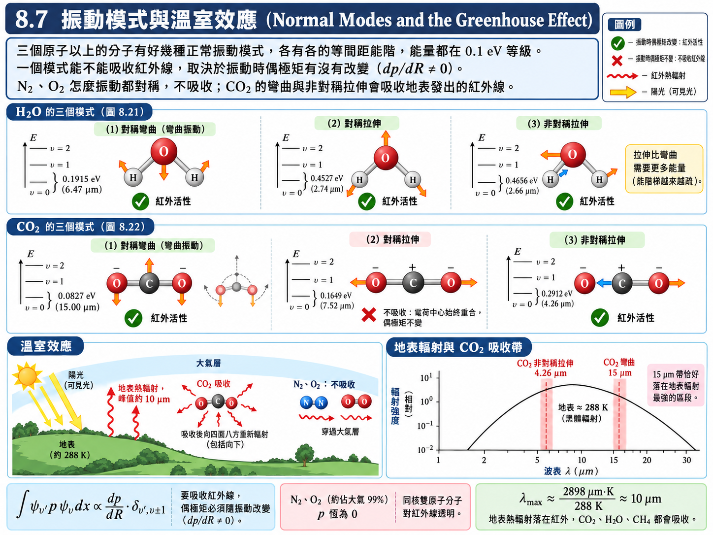
溫室效應 (greenhouse effect) 就是這麼來的。太陽光（主要是可見光）照到地表，地表吸收後升溫，再以熱輻射的形式向外發射；地表溫度約 \(288 \ \text{K}\)，由黑體輻射的維因定律，它的輻射峰值在 \(\lambda_{\max} \approx 2898 \ \mu\text{m}\cdot\text{K} / 288 \ \text{K} \approx 10 \ \mu\text{m}\)，正是紅外線。\(\text{CO}_2\) 的 \(15 \ \mu\text{m}\) 彎曲模式恰好落在這個輻射帶上，會把地表要散失到太空的紅外線吸收下來，使大氣升溫。
那大氣中佔了約 \(78\%\) 的 \(\text{N}_2\) 與約 \(21\%\) 的 \(\text{O}_2\) 呢？它們都是兩顆相同原子組成的分子，振動時電荷分佈始終對稱，偶極矩不變（\(p_1 = 0\)），由 \((8.18)\) 推導末尾的條件，幾乎不吸收紅外線。所以儘管 \(\text{CO}_2\) 在大氣中的含量很少，它卻是主要的溫室氣體之一；燃燒化石燃料使 \(\text{CO}_2\) 增加，被認為是全球暖化的主要原因。大氣中的 \(\text{H}_2\text{O}\)、\(\text{CH}_4\) 也是極性變化明顯的分子，同樣會產生溫室效應。
【物理知識回顧】 一個看似純粹的量子力學細節——「偶極矩對鍵長的導數 \(p_1\) 是否為零」——直接決定了哪些氣體會造成溫室效應。這也再次說明選擇規則的意義：它不只告訴你「能量差是多少」，還告訴你「這個能量差能不能和光交換」。
8.8 分子的電子光譜 (Electronic Spectra of Molecules)#
分子的電子能態之間也會躍遷，能量在 eV 等級，對應可見光與紫外線。與原子不同的是，分子的電子躍遷幾乎總是伴隨著振動與轉動能態的改變：每個電子能態上都疊著一整套振動能階，每個振動能階上又疊著一整排轉動能階，於是原子的一條譜線在分子中展開成一整片密集的線，稱為帶狀光譜 (band spectrum)。
能階之間的躍遷也不代表一定會放光。除了選擇規則之外，分子放光還有許多其他的條件與路徑。分子的放光可以分成兩大類：螢光 (fluorescence) 與磷光 (phosphorescence)。
螢光：日常的觀察#
先從日常經驗看螢光的特性。一支黃色螢光筆，不論照藍光、綠光或紫外光，它看起來都是黃色的——它的顏色不隨環境光 (ambient light) 改變。一般物體不是這樣：白色的椅子在藍光下看起來就是藍的，因為它的顏色大部分來自反射，反射光當然跟入射光有關。螢光物質發出的光則只跟材料本身有關，跟照什麼光無關；而且它能把能量較高的各種光（綠、藍、紫、紫外）全部「轉換」成同一種顏色，所以只要一點點光線就顯得特別亮——這就是交通標誌、反光背心喜歡用螢光材料的原因。
螢光的機制#
圖 8.24 中，下方的曲線是分子電子基態的位能曲線，上方是電子受激態的位能曲線，兩條曲線上都畫著振動能階。分子受激之後，電子分佈改變、鍵結變弱，平衡鍵長通常會變長一點，所以受激態的曲線整條往右偏移。
吸收：分子吸收一個光子，從基態的 \(\upsilon = 0\) 往上跳到受激態某個較高的振動能階。（這條箭頭是垂直的：電子躍遷約在 \(10^{-15} \ \text{s}\) 內完成，而 \(\text{CO}\) 振動一次要 \(1/\nu_0 \approx 1.6 \times 10^{-14} \ \text{s}\)，躍遷的瞬間原子核來不及移動，原子核間距不變。）
振動弛豫：分子在與其他分子的碰撞中，把多餘的振動能量一點一點交出去，不放光，一路掉到受激態曲線的谷底。
放光：從受激態的谷底，以輻射躍遷掉回基態的某個振動能階，放出螢光。
放出的光子能量只由「受激態谷底」與「基態振動能階」之間的差決定，與當初吸收的是什麼光無關；而且因為中間被碰撞拿走了一部分能量，放射頻率比吸收頻率低（這個紅移稱為史托克位移 (Stokes shift)）。這正好解釋了螢光筆的兩個特性：不論照藍光、綠光還是紫外光，只要光子能量夠把分子送上受激態，它都先掉到谷底，再放出同一種顏色的光。
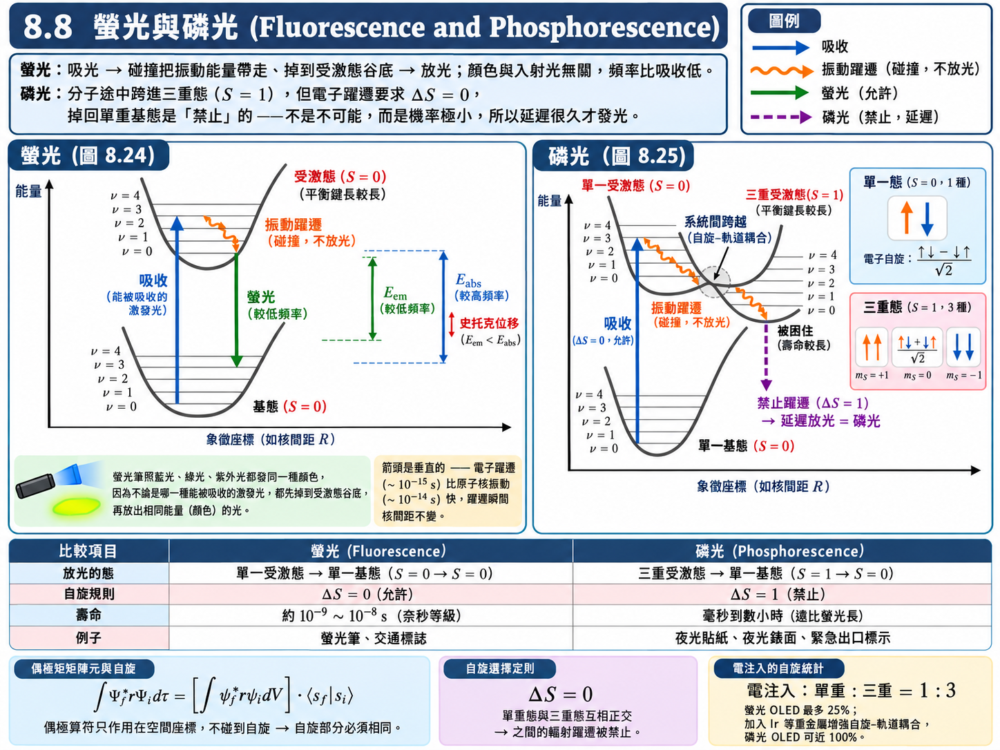
磷光比螢光更微妙，它牽涉到 8.4 的單重態與三重態，以及電子躍遷的一條新的選擇規則。
假設與已知 (Assumptions & Preliminaries)#
【已知 1】 偶極積分的條件： 第六章 \((6.34)\) 與 8.7【已知 5】。躍遷要放光，初態與末態之間的電偶極積分必須不為零；現在積分對象要包含所有電子的空間與自旋座標。
\[\int\Psi_f^{*}\left( -e\sum_i\vec{r}_i \right)\Psi_i\,d\tau \ne 0\]\(\Psi_i, \Psi_f\) : 初態與末態的總波函數（空間 \(\times\) 自旋）(Total wave functions)
\(\vec{r}_i\) : 第 \(i\) 個電子的位置 (Position of electron \(i\))，\([\text{m}]\)
\(d\tau\) : 對所有電子的空間座標積分、並對自旋座標求和 (Integration over space and summation over spin)
【已知 2】 8.4【定義 1】的自旋波函數： 單重態 \(s_A\)（\(S = 0\)，一種）與三重態 \(s_S\)（\(S = 1\)，三種）。
【假設 1】 電偶極算符不作用在自旋上 (The dipole operator is spin-independent)： 光的電場只推動電荷的位置，\(-e\sum_i\vec{r}_i\) 裡沒有任何自旋變數。
【假設 2】 空間與自旋可分離 (Separation of space and spin)： 與 8.4【假設 1】相同；對由輕原子組成的分子，自旋–軌道耦合很弱，這是很好的近似。
\[\Psi = \psi\left( \text{空間} \right)s\left( \text{自旋} \right)\]【定義 1】 自旋的內積與多重度 (Spin overlap and multiplicity)： 兩個自旋態的內積定義為對所有自旋組合求和；\(2S+1\) 稱為多重度。
\[\left\langle s \middle| s' \right\rangle \overset{\text{def}}{=} \sum_{\sigma_1, \sigma_2}s^{*}\left( \sigma_1, \sigma_2 \right)s'\left( \sigma_1, \sigma_2 \right), \qquad \text{多重度} \overset{\text{def}}{=} 2S + 1\]\(\sigma_1, \sigma_2\) : 兩個電子各自的自旋座標，各取 \(\uparrow\) 或 \(\downarrow\)
單重態 (singlet)：\(S = 0\)，多重度 \(1\)；三重態 (triplet)：\(S = 1\)，多重度 \(3\)
【推導 1】 單重態與三重態互相正交 (Orthogonality of singlet and triplet)： 不同的兩電子基底態 \(\uparrow\uparrow\)、\(\uparrow\downarrow\)、\(\downarrow\uparrow\)、\(\downarrow\downarrow\) 彼此正交、各自歸一。
\[\begin{split}\begin{gather*} \left\langle \uparrow\uparrow \middle| s_A \right\rangle &\overset{\text{已知 2}}{=}& 0 \\ \left\langle \downarrow\downarrow \middle| s_A \right\rangle &\overset{\text{已知 2}}{=}& 0 \\ \left\langle \tfrac{1}{\sqrt{2}}\left( \uparrow\downarrow + \downarrow\uparrow \right) \middle| s_A \right\rangle &\overset{\text{已知 2}}{=}& \frac{1}{2}\left( 1 - 1 \right) = 0 \end{gather*}\end{split}\]
推導：電子躍遷的自旋選擇規則#
把【已知 1】的積分拆開：
空間積分不管多大，只要自旋部分的內積為零，整個偶極積分就是零。由【推導 1】，單重態與三重態的內積恆為零，所以：
不同總自旋的電子態之間，輻射躍遷是被禁止的。 單重態只能放光掉到單重態，三重態只能放光掉到三重態。
磷光的機制#
大部分分子的電子基態是單重態（\(S = 0\)，所有電子成對、自旋反平行）。分子吸收光子後，一個電子被送到上面的軌域，下面留下一個空位——用電子工程的語言，就是一個電子與一個電洞。兩者各帶自旋 \(\frac{1}{2}\)，合起來的總自旋有兩種可能：\(S = 0\)（單重受激態，只有一種狀態）或 \(S = 1\)（三重受激態，有三種狀態）。
圖 8.25 中的過程是：
吸收：單一基態 \(\to\) 單一受激態。\(\Delta S = 0\)，允許。
振動弛豫：碰撞把分子一路帶往單一受激態的低振動能階。
系統間跨越：若單一受激態的某個振動能階，恰好與三重受激態的某個能階能量相近，分子有一定機率轉移到三重態。再經過幾次碰撞，它的能量掉到兩條曲線的交會點以下，就被困在三重態裡，最後落到三重態的 \(\upsilon = 0\)。
延遲的放光：三重受激態 \(\to\) 單一基態需要 \(\Delta S = 1\)，違反剛推出的選擇規則，是禁止躍遷。
「禁止」並不是「不可能」，而是「機率極小」。三重態最終還是會掉下來，但需要一個「第三者」來打破自旋守恆的限制——在分子內部，主要是很弱的自旋–軌道耦合 (spin–orbit coupling)，讓【假設 2】不再完全成立、單重與三重態有了一點點混合；外界的碰撞也可能參與。因此三重態的壽命很長：單重受激態通常在 \(10^{-9} \sim 10^{-8} \ \text{s}\) 內就放出螢光，三重態放出磷光卻可以拖到幾毫秒、幾分鐘，甚至幾小時。這種吸光之後延遲很久才發出的光，就是磷光。夜光貼紙、夜光錶面、緊急出口標示在關燈後仍持續發光，靠的就是磷光。
註：「磷光」這個名字來自白磷在暗處發出的微光；古人在墳地看到的「鬼火」，一般也被歸因於磷化物。不過這兩者其實都是化學發光 (chemiluminescence)——磷化物緩慢氧化或自燃所放出的光，能量來自化學反應而不是先前吸收的光，與這裡講的光激發磷光並不是同一種機制。
【進階探討：OLED 為什麼在乎三重態？】
在 OLED（有機發光二極體）中，激發分子的不是光，而是從兩端電極注入的電子與電洞。它們在有機分子上相遇時，自旋方向是隨機的，四種組合（一種單重、三種三重）出現的機會相同——單重態與三重態的比例是 \(1:3\)。若發光材料只能靠螢光發光，那 \(75\%\) 落入三重態的激發就因為 \(\Delta S = 0\) 的禁制而白白浪費，內部量子效率最高只有 \(25\%\)。磷光型 OLED 的做法是在分子中放入銥 (Ir)、鉑 (Pt) 這類重金屬原子，大幅增強自旋–軌道耦合，讓三重態也能快速放光，內部量子效率因此可以逼近 \(100\%\)。一條看似抽象的自旋選擇規則，直接決定了手機螢幕的耗電量。
【物理知識回顧】 回頭看整章，會發現每一種能階都有自己的選擇規則：原子的 \(\Delta l = \pm1\)、轉動的 \(\Delta J = \pm1\)、振動的 \(\Delta\upsilon = \pm1\)、電子自旋的 \(\Delta S = 0\)。為什麼到處都有選擇規則？因為這些能態全都是某一條本徵方程式的解，而本徵函數天生彼此正交、對稱性很高；把整個空間積分起來，絕大部分都是零。放光時要計算的是偶極積分，中間多插了一個位置算符，對稱性被輕微破壞，於是只有少數幾組組合逃過一劫不為零——那幾組就是選擇規則所允許的躍遷。至於自旋，位置算符根本碰不到它，所以連「輕微破壞」都沒有，留下的就是最嚴格的 \(\Delta S = 0\)。
本章總結
我們從「把原子核也加進來」出發，看到了分子比原子多出來的兩件事——鍵結與形狀：
鍵結就是電子共享。會不會鍵結，完全取決於能量是否比分開時低；\(\text{H}_2^+\) 的對稱軌道 \(\psi_S\) 把電子堆在兩核之間，在 \(0.106 \ \text{nm}\) 處形成 \(2.65 \ \text{eV}\) 的鍵，反對稱軌道則完全不鍵結。
自旋決定軌道的對稱性。\(\text{H}_2\) 的總波函數必須反對稱，故鍵結態必為自旋反平行的單重態，鍵結能 \(4.5 \ \text{eV}\)。
化學規則是量子力學的推論。\(p_x\)、\(p_y\) 是 \(m_l = \pm1\) 的線性組合 \((8.2)\)；\(\sigma\)、\(\pi\) 鍵、\(sp^3\) 的 \(109.5^\circ\)、\(sp^2\) 的 \(120^\circ\) 與苯環的共軛鍵，都來自「本徵函數的線性組合 + 能量最低」。
轉動：\(E_J = J(J+1)\hbar^2/2I\)，選擇規則 \(\Delta J = \pm1\)，光譜線等間距，落在微波區；能量遠小於 \(kT\)，室溫下大多處於受激態。由轉動光譜可以反推鍵長。
振動：拋物線近似把任何平衡點附近的運動都變成諧振子，\(E_\upsilon = (\upsilon + \frac{1}{2})\hbar\sqrt{k/m'}\)，選擇規則 \(\Delta\upsilon = \pm1\)，落在紅外區；能量約為 \(kT\) 的 10 倍，室溫下大多處於基態。偶極矩是否隨振動改變，決定了 \(\text{CO}_2\) 是溫室氣體、\(\text{N}_2\) 與 \(\text{O}_2\) 不是。
電子光譜：螢光來自單一受激態谷底的放光，顏色與入射光無關；磷光來自被困在三重態、違反 \(\Delta S = 0\) 的延遲放光。
換句話說，化學課上那些要背的鍵結模型，以及微波爐、溫室效應、螢光筆、OLED 背後的原理，全部都是同一套量子力學——本徵方程式、線性組合、對稱性與選擇規則——在分子上的應用。